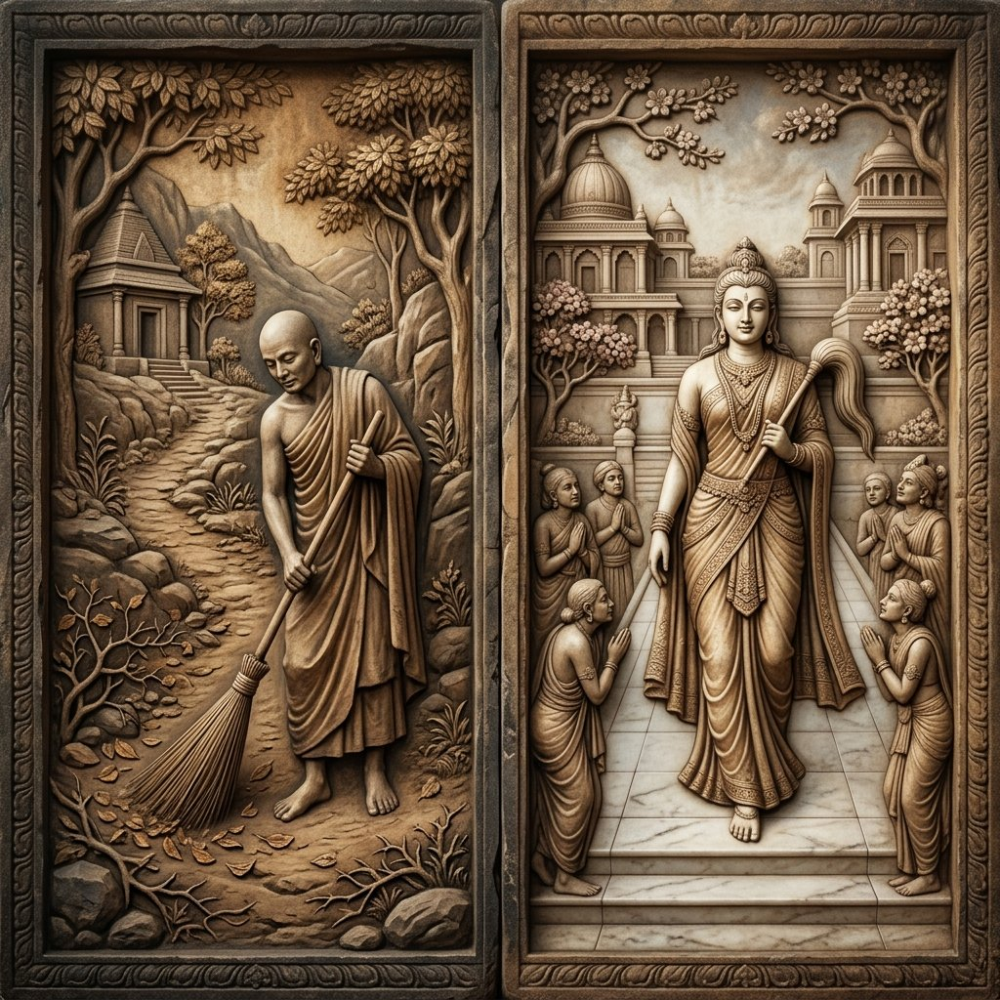
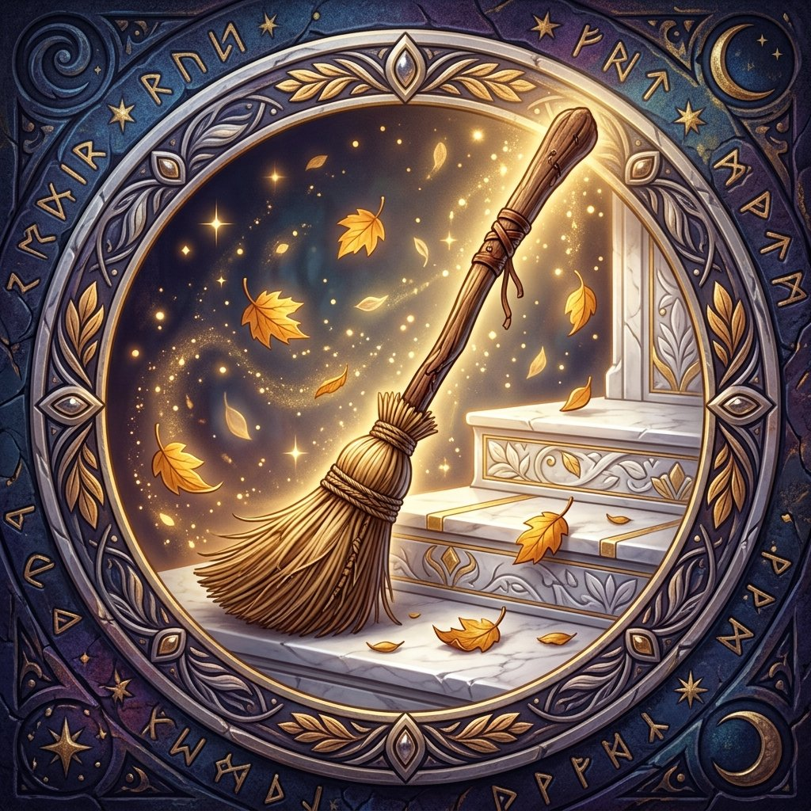
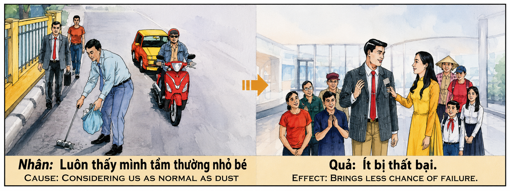

El Camino Limpio y la Belleza del Alma The Clean Path and the Beauty of the Soul La Via Pulita e la Bellezza dell'Anima 清净之道与心灵之美 الطريق النظيف وجمال الروح Чистый путь и красота души Der saubere Weg und die Schönheit der Seele Le chemin propre et la beauté de l’âme 清らかな道と魂の美しさ O Caminho Limpo e a Beleza da Alma Con Đường Sạch Sẽ Và Vẻ Đẹp Của Linh Hồn
"Quien se agacha para limpiar el camino de los demás no solo retira las piedras del suelo; retira el orgullo de su propia mente. Al servir con humildad, el alma se pule como un espejo celestial, y en sus vidas siguientes renacerá libre de obstáculos, con una belleza física radiante que inspira reverencia espontánea, porque aquel que suavizó el andar de los hombres verá su propio camino alfombrado de flores por el universo." "He who bends down to clean the path of others does not only remove stones from the ground; he removes pride from his own mind. By serving with humility, the soul is polished like a celestial mirror, and in subsequent lives will be reborn free of obstacles, with a radiant physical beauty that inspires spontaneous reverence, for he who softened the steps of men will see his own path carpeted with flowers by the universe." "Chi si china a sgombrare il cammino degli altri non solo rimuove le pietre dalla terra; rimuove l'orgoglio dalla propria mente. Servendo con umiltà, l'anima si lucida come uno specchio celeste, e nelle vite successive rinascerà libero da ostacoli, con una radiosa bellezza fisica che ispira spontanea reverenza, perché chi ha ammorbidito il cammino degli uomini vedrà il proprio cammino tappezzato di fiori attraverso l'universo." “屈身为他人扫清道路的人，不仅清除了地上的石头，也消除了自己心中的傲慢。通过谦卑的服务，灵魂像天国的镜子一样被抛光，在他的来生中，他将重生无障碍，拥有令人自发敬畏的容光焕发的身体美，因为让人们的脚步变得柔和的人将看到他自己的道路铺满了宇宙中的鲜花。” "إن من ينحني لتمهيد طريق الآخرين لا يزيل الحجارة من الأرض فحسب، بل يزيل الكبرياء من عقله. ومن خلال الخدمة بتواضع، تُصقل الروح مثل مرآة سماوية، وفي حياته التالية سيولد من جديد خاليًا من العقبات، مع جمال جسدي مشع يلهم الخشوع العفوي، لأن من خفف مشية الرجال سيرى طريقه الخاص مفروشًا بالزهور عبر الكون." «Тот, кто наклоняется, чтобы расчистить путь другим, не только убирает камни с земли; он удаляет гордость из своего собственного ума. Служа со смирением, душа отполируется, как небесное зеркало, и в следующих жизнях он переродится свободным от препятствий, с сияющей физической красотой, которая внушает спонтанное благоговение, потому что тот, кто смягчил походку людей, увидит свой собственный путь, устланный цветами во вселенной». „Wer sich beugt, um anderen den Weg freizumachen, entfernt nicht nur die Steine vom Boden, er entfernt den Stolz aus seinem eigenen Geist. Durch demütiges Dienen wird die Seele wie ein himmlischer Spiegel poliert, und in seinen folgenden Leben wird er frei von Hindernissen mit einer strahlenden körperlichen Schönheit wiedergeboren, die spontane Ehrfurcht hervorruft, denn wer den Weg der Menschen weicher gemacht hat, wird seinen eigenen Weg mit Blumen bedeckt durch das Universum sehen.“ "Celui qui s'abaisse pour ouvrir le chemin aux autres n'enlève pas seulement les pierres du sol, mais il enlève l'orgueil de son propre esprit. En servant avec humilité, l'âme est polie comme un miroir céleste, et dans ses vies suivantes, il renaîtra sans obstacles, avec une beauté physique rayonnante qui inspire une révérence spontanée, car celui qui a adouci la marche des hommes verra son propre chemin tapissé de fleurs à travers l'univers." 「身をかがめて他人の道を切り開く者は、地面から石を取り除くだけでなく、自分自身の心から誇りを取り除きます。謙虚に奉仕することによって、魂は天の鏡のように磨かれ、次の人生では、自発的な畏敬の念を引き起こす輝かしい肉体美を備えて障害なく生まれ変わります。なぜなら、人々の歩みを和らげた者は、宇宙全体に花の絨毯が敷き詰められた自分の道を見ることになるからです。」 "Aquele que se abaixa para limpar o caminho dos outros não apenas remove as pedras do chão; ele remove o orgulho de sua própria mente. Ao servir com humildade, a alma é polida como um espelho celestial, e nas vidas seguintes renascerá livre de obstáculos, com uma beleza física radiante que inspira reverência espontânea, porque aquele que suavizou a caminhada dos homens verá seu próprio caminho atapetado de flores pelo universo." "Kẻ cúi đầu quét dọn con đường cho kẻ khác qua lại, không chỉ nhặt sạch sỏi đá dưới đất, mà còn quét sạch kiêu ngạo trong tâm trí mình. Nhờ hạ mình phụng sự, linh hồn được mài giũa như chiếc gương thiêng liêng, kiếp sau tái sinh không chướng ngại, sở hữu dung mạo đoan trang thanh tú khiến mọi người tự khắc kính trọng, vì kẻ đã làm êm dịu bước chân của chúng sinh sẽ thấy con đường đời mình được vũ trụ trải đầy hoa."
Entre las virtudes que más aceleran la purificación espiritual, la humildad voluntaria destaca como un fuego transmutador. El acto de limpiar un camino público, barrer las calles o recoger los deshechos ajenos es visto, en la sabiduría kármica profunda, no como un trabajo servil, sino como el más sublime ejercicio de purificación del ego. Bajar el cuerpo hacia la tierra, doblar la espalda y ocuparse de la suciedad que otros han dejado es una declaración de guerra directa contra la soberbia y la autoimportancia, que son las raíces de las que brotan la mayoría de los sufrimientos humanos. Quien barre con devoción y amor por los que pasarán después, está limpiando activamente los canales de su propia conciencia de toda mancha de vanidad.
Este acto genera un karma positivo sumamente peculiar y multifacético, que opera en tres dimensiones: estética, social y práctica. La primera es la belleza del alma que se proyecta en el cuerpo. Al embellecer el entorno físico, al convertir el caos y la suciedad en orden y limpieza, el alma planta la semilla de la armonía. El universo responde en la siguiente encarnación otorgando un cuerpo de proporciones armoniosas, una salud radiante y un rostro de belleza y gracia magnéticas. No es una belleza superficial nacida de la vanidad, sino una emanación de la pureza interna que se refleja en la carne, una luz que calma y pacifica a quienes la contemplan.
La segunda dimensión es la ausencia de obstáculos en la vida. En el intrincado tejido kármico, lo que haces por el camino de los demás determina la suavidad del tuyo. Al retirar piedras, espinas, vidrios y ramas que podrían hacer tropezar, herir o retrasar a los caminantes anónimos, estás borrando tus propias deudas kármicas del pasado. Así, en vidas futuras, tu camino financiero, profesional y emocional fluirá con una facilidad misteriosa y maravillosa. Donde otros encuentran barreras cerradas, tú encontrarás puertas que se abren solas y manos amigas dispuestas a ayudarte, porque el universo recuerda que tú pasaste la vida abriendo paso a los pies cansados.
La tercera dimensión es el respeto y la reverencia natural. El orgullo exige reconocimiento y a menudo cosecha rechazo; la humildad no busca nada y lo recibe todo. Al rebajarte voluntariamente en el polvo para servir, el cosmos te eleva kármicamente. En tus siguientes vidas, las personas sentirán una reverencia espontánea e instintiva hacia ti; tu sola presencia inspirará confianza, autoridad moral y amor. Tu Ikigai como ser humano se alinea cuando comprendes que la verdadera elevación espiritual no consiste en situarse por encima del mundo, sino en sostenerlo desde abajo, haciendo que el paso de cada alma por esta tierra sea un poco más ligero, más limpio y más hermoso.
Among the virtues that most accelerate spiritual purification, voluntary humility stands out as a transmuting fire. The act of cleaning a public path, sweeping the streets, or gathering others' waste is seen, in deep karmic wisdom, not as servile labor, but as the most sublime exercise of ego purification. Lowering the body toward the earth, bending the back, and tending to the dirt that others have left is a direct declaration of war against pride and self-importance, which are the roots from which most human sufferings sprout. Whoever sweeps with devotion and love for those who will pass after, is actively cleaning the channels of their own consciousness from any stain of vanity.
This act generates an extremely peculiar and multifaceted positive karma, operating in three dimensions: aesthetic, social, and practical. The first is the beauty of the soul projected onto the body. By beautifying the physical environment, by turning chaos and dirt into order and cleanliness, the soul plants the seed of harmony. The universe responds in the next incarnation by granting a body of harmonious proportions, radiant health, and a face of magnetic beauty and grace. It is not a superficial beauty born of vanity, but an emanation of inner purity reflected in the flesh, a light that calms and pacifies those who contemplate it.
The second dimension is the absence of obstacles in life. In the intricate karmic web, what you do for the path of others determines the smoothness of your own. By removing stones, thorns, glass, and branches that could trip, injure, or delay anonymous travelers, you are erasing your own past karmic debts. Thus, in future lives, your financial, professional, and emotional path will flow with mysterious and wonderful ease. Where others find closed barriers, you will find doors opening on their own and friendly hands willing to help you, because the universe remembers that you spent your life clearing the way for tired feet.
The third dimension is respect and natural reverence. Pride demands recognition and often harvests rejection; humility seeks nothing and receives everything. By voluntarily lowering yourself to the dust to serve, the cosmos elevates you karmically. In your next lives, people will feel a spontaneous and instinctive reverence toward you; your sole presence will inspire trust, moral authority, and love. Your Ikigai as a human being aligns when you understand that true spiritual elevation does not consist in placing yourself above the world, but in supporting it from below, making the passage of every soul on this earth a bit lighter, cleaner, and more beautiful.
Tra le virtù che più accelerano la purificazione spirituale, spicca l'umiltà volontaria come fuoco trasmutatore. L'atto di pulire un percorso pubblico, spazzare le strade o raccogliere i rifiuti altrui è visto, nella profonda saggezza karmica, non come un lavoro umile, ma come l'esercizio più sublime nella purificazione dell'ego. Abbassarsi a terra, piegare la schiena e fare i conti con lo sporco lasciato dagli altri è una diretta dichiarazione di guerra contro l'orgoglio e la presunzione, che sono le radici da cui scaturisce la maggior parte della sofferenza umana. Chi spazza con devozione e amore per coloro che passeranno dopo, sta attivamente pulendo i canali della propria coscienza da ogni macchia di vanità.
Questo atto genera un karma positivo estremamente peculiare e sfaccettato, che opera in tre dimensioni: estetica, sociale e pratica. La prima è la bellezza dell'anima che si proietta nel corpo. Abbellindo l'ambiente fisico, trasformando il caos e la sporcizia in ordine e pulizia, l'anima pianta il seme dell'armonia. L'universo risponde nella prossima incarnazione garantendo un corpo di proporzioni armoniose, salute radiosa e un volto di magnetica bellezza e grazia. Non è una bellezza superficiale nata dalla vanità, ma un'emanazione di purezza interiore che si riflette nella carne, una luce che calma e pacifica chi la contempla.
La seconda dimensione è l'assenza di ostacoli nella vita. Nell'intricata trama karmica, ciò che fai per il percorso degli altri determina la scorrevolezza del tuo. Rimuovendo pietre, spine, vetro e rami che potrebbero inciampare, ferire o ritardare i camminatori anonimi, cancellerai i tuoi debiti karmici del passato. Pertanto, nelle vite future, il tuo percorso finanziario, professionale ed emotivo scorrerà con una facilità misteriosa e meravigliosa. Dove gli altri trovano barriere chiuse, tu troverai porte che si aprono da sole e mani amiche disposte ad aiutarti, perché l'universo ricorda che hai passato la vita a far posto ai piedi stanchi.
La terza dimensione è il rispetto e la naturale riverenza. L'orgoglio esige riconoscimento e spesso miete rifiuto; L'umiltà non cerca nulla e riceve tutto. Abbassandoti volontariamente nella polvere per servire, il cosmo ti eleva karmicamente. Nelle vostre prossime vite, le persone sentiranno una reverenza spontanea e istintiva nei vostri confronti; La tua semplice presenza ispirerà fiducia, autorità morale e amore. Il tuo Ikigai come essere umano si allinea quando capisci che la vera elevazione spirituale non consiste nello stare al di sopra del mondo, ma piuttosto nel sostenerlo dal basso, rendendo il passaggio di ogni anima su questa terra un po' più leggero, più pulito e più bello.
在最能加速精神净化的美德中，自愿的谦卑像一团转化之火一样脱颖而出。在深刻的业力智慧中，打扫公共道路、清扫街道或收集他人废物的行为并不被视为卑微的工作，而是净化自我的最崇高的练习。将你的身体降低到地面，弯曲你的背部并处理别人留下的污垢，这是对骄傲和自负的直接宣战，这是大多数人类痛苦的根源。一个以奉献和爱去扫除后人的人，正在积极地清除自己良心的每一个虚荣污点。
这种行为产生了极其独特和多方面的积极业力，它在三个方面发挥作用：审美、社会和实践。首先是投射到身体中的灵魂之美。通过美化物质环境，通过将混乱和污垢转化为秩序和清洁，灵魂播下了和谐的种子。宇宙在下一世做出回应，赐予和谐比例的身体、容光焕发的健康以及磁性美丽和优雅的面孔。它不是一种源于虚荣的肤浅之美，而是一种反映在肉体上的内在纯洁的散发，一种使沉思它的人平静和安宁的光芒。
第二个维度是生活中没有障碍。在错综复杂的业力编织中，你为别人的道路做了什么，决定了你的道路是否顺利。通过清除可能绊倒、伤害或拖延匿名步行者的石头、荆棘、玻璃和树枝，你就可以消除自己过去的业债。因此，在未来的生活中，你的财务、职业和情感之路将神秘而美妙地轻松进行。在别人发现封闭的障碍的地方，你会发现自己打开的门和愿意帮助你的友好的双手，因为宇宙会记住你一生都在为疲惫的双脚让路。
第三个维度是尊重和自然的敬畏。骄傲需要得到认可，但往往会遭到拒绝；谦卑不求什么，却接受一切。通过自愿将自己降到尘埃去服务，宇宙业力地提升了你。在你的来世，人们会对你产生一种自发的、本能的尊敬；您的存在就会激发信心、道德权威和爱。当你明白真正的精神提升并不在于站在世界之上，而是从底层支持它，让每个灵魂在这个地球上的旅程变得更轻松、更干净、更美丽时，你作为一个人的生命就对齐了。
من بين الفضائل التي تسرع عملية التطهير الروحي، يبرز التواضع الطوعي كنار متحولة. يُنظر إلى فعل تنظيف الطريق العام أو كنس الشوارع أو جمع نفايات الآخرين، في حكمة الكارما العميقة، ليس كعمل وضيع، ولكن كممارسة سامية في تطهير الأنا. إن إنزال جسدك إلى الأرض وثني ظهرك والتعامل مع الأوساخ التي تركها الآخرون هو إعلان مباشر للحرب على الكبرياء وأهمية الذات، وهي الجذور التي تنبع منها معظم المعاناة الإنسانية. إن من يكتسح بإخلاص ومحبة لمن سيأتون بعده، ينظف قنوات ضميره من كل وصمة عار.
يولد هذا الفعل كارما إيجابية غريبة للغاية ومتعددة الأوجه، والتي تعمل في ثلاثة أبعاد: الجمالية والاجتماعية والعملية. الأول هو جمال الروح الذي ينعكس في الجسد. ومن خلال تجميل البيئة المادية، وتحويل الفوضى والأوساخ إلى نظام ونظافة، تزرع الروح بذرة الانسجام. يستجيب الكون في التجسد التالي بمنح جسد ذي أبعاد متناغمة وصحة مشعة ووجه ذو جمال ورشاقة مغناطيسيين. إنه ليس جمالًا سطحيًا مولودًا من الغرور، بل انبثاقًا من النقاء الداخلي الذي ينعكس في الجسد، نورًا يهدئ ويهدئ من يتأمله.
البعد الثاني هو غياب العوائق في الحياة. في النسيج المعقد للكارما، فإن ما تفعله من أجل طريق الآخرين يحدد مدى سلاسة طريقك. من خلال إزالة الحجارة والأشواك والزجاج والفروع التي يمكن أن تتعثر أو تجرح أو تؤخر المشاة المجهولين، فإنك تمحو ديون الكارما الخاصة بك من الماضي. وهكذا، في حياتك المستقبلية، سوف يتدفق مسارك المالي والمهني والعاطفي بسهولة غامضة ورائعة. حيث يجد الآخرون حواجز مغلقة، ستجد أبوابًا تفتح من تلقاء أنفسهم وأياديهم الودودة مستعدة لمساعدتك، لأن الكون يتذكر أنك قضيت حياتك تفسح المجال لأقدام متعبة.
البعد الثالث هو الاحترام والتبجيل الطبيعي. يتطلب الكبرياء الاعتراف وغالباً ما يحصد الرفض؛ التواضع لا يطلب شيئًا ويتلقى كل شيء. من خلال النزول طوعًا إلى التراب من أجل الخدمة، فإن الكون يرفعك بشكل كارمي. في حياتكم القادمة، سيشعر الناس بإجلال عفوي وغريزي تجاهكم؛ مجرد وجودك سوف يلهم الثقة والسلطة الأخلاقية والحب. ينسجم إيكيجاي الخاص بك كإنسان عندما تفهم أن الارتفاع الروحي الحقيقي لا يتكون من الوقوف فوق العالم، بل دعمه من الأسفل، مما يجعل مرور كل روح على هذه الأرض أخف قليلاً وأنظف وأكثر جمالاً.
Среди добродетелей, наиболее ускоряющих духовное очищение, выделяется добровольное смирение, как преобразующий огонь. Уборка общественных дорог, подметание улиц или сбор чужого мусора рассматривается в глубокой кармической мудрости не как черная работа, а как наиболее возвышенное упражнение по очищению эго. Опускать свое тело на землю, сгибать спину и иметь дело с грязью, которую оставили другие, — это прямое объявление войны гордыне и самомнению, которые являются корнями, из которых проистекает большинство человеческих страданий. Тот, кто с преданностью и любовью подметает тех, кто пройдет следом, активно очищает каналы своей совести от всякого пятна тщеславия.
Этот поступок порождает чрезвычайно своеобразную и многогранную положительную карму, которая действует в трех измерениях: эстетическом, социальном и практическом. Первое — это красота души, проецируемая в тело. Украшая физическую среду, превращая хаос и грязь в порядок и чистоту, душа сеет семя гармонии. Вселенная отвечает в следующем воплощении, даруя тело гармоничных пропорций, сияющее здоровье и лицо магнетической красоты и грации. Это не поверхностная красота, рожденная тщеславием, а эманация внутренней чистоты, отражающаяся в плоти, свет, успокаивающий и умиротворяющий созерцающих его.
Второе измерение — отсутствие препятствий в жизни. В запутанном переплетении кармы то, что вы делаете для пути других, определяет гладкость вашего пути. Убирая камни, шипы, стекла и ветки, которые могут споткнуться, поранить или задержать анонимных идущих, вы стираете собственные кармические долги из прошлого. Таким образом, в будущих жизнях ваш финансовый, профессиональный и эмоциональный путь потечет с загадочной и чудесной легкостью. Там, где другие находят закрытые барьеры, вы найдете двери, которые открываются сами по себе, и дружелюбные руки, готовые помочь вам, потому что Вселенная помнит, что вы провели свою жизнь, прокладывая путь усталым ногам.
Третье измерение – это уважение и естественное почтение. Гордость требует признания и часто пожинает неприятие; Смирение ничего не ищет и получает все. Добровольно опуская себя в прах ради служения, космос кармически возвышает вас. В ваших следующих жизнях люди почувствуют к вам спонтанное и инстинктивное почтение; Одно ваше присутствие вселит уверенность, моральный авторитет и любовь. Ваш Икигай как человека выравнивается, когда вы понимаете, что истинное духовное возвышение состоит не в том, чтобы стоять над миром, а в том, чтобы поддерживать его снизу, делая путь каждой души на этой земле немного светлее, чище и прекраснее.
Unter den Tugenden, die die spirituelle Reinigung am meisten beschleunigen, sticht freiwillige Demut als verwandelndes Feuer hervor. Das Reinigen eines öffentlichen Weges, das Fegen der Straßen oder das Einsammeln der Abfälle anderer Menschen wird in tiefer karmischer Weisheit nicht als geringfügige Arbeit angesehen, sondern als die erhabenste Übung zur Reinigung des Egos. Den Körper auf die Erde zu senken, den Rücken zu beugen und sich mit dem Dreck auseinanderzusetzen, den andere hinterlassen haben, ist eine direkte Kampfansage an Stolz und Selbstgefälligkeit, die die Wurzeln sind, aus denen das meiste menschliche Leiden entspringt. Wer mit Hingabe und Liebe für die Nachkommenden fegt, reinigt aktiv die Kanäle seines eigenen Gewissens von jedem Makel der Eitelkeit.
Dieser Akt erzeugt ein äußerst eigenartiges und vielschichtiges positives Karma, das in drei Dimensionen wirkt: ästhetisch, sozial und praktisch. Das erste ist die Schönheit der Seele, die in den Körper projiziert wird. Durch die Verschönerung der physischen Umgebung, durch die Umwandlung von Chaos und Schmutz in Ordnung und Sauberkeit pflanzt die Seele den Samen der Harmonie. Das Universum reagiert in der nächsten Inkarnation, indem es einen Körper mit harmonischen Proportionen, strahlender Gesundheit und einem Gesicht von magnetischer Schönheit und Anmut schenkt. Es ist keine oberflächliche Schönheit, die aus Eitelkeit entsteht, sondern eine Ausstrahlung innerer Reinheit, die sich im Fleisch widerspiegelt, ein Licht, das diejenigen beruhigt und besänftigt, die es betrachten.
Die zweite Dimension ist die Abwesenheit von Hindernissen im Leben. Was Sie im komplizierten karmischen Geflecht für den Weg anderer tun, bestimmt die Geschmeidigkeit Ihres Weges. Indem Sie Steine, Dornen, Glas und Äste entfernen, die anonyme Wanderer stolpern, verletzen oder aufhalten könnten, löschen Sie Ihre eigenen karmischen Schulden aus der Vergangenheit. So wird Ihr finanzieller, beruflicher und emotionaler Weg in zukünftigen Leben mit einer geheimnisvollen und wunderbaren Leichtigkeit verlaufen. Wo andere geschlossene Barrieren finden, finden Sie Türen, die sich von selbst öffnen, und freundliche Hände, die bereit sind, Ihnen zu helfen, denn das Universum erinnert sich daran, dass Sie Ihr Leben damit verbracht haben, müden Füßen Platz zu machen.
Die dritte Dimension ist Respekt und natürliche Ehrfurcht. Stolz fordert Anerkennung und erntet oft Ablehnung; Demut sucht nichts und empfängt alles. Indem du dich freiwillig in den Staub erniedrigst, um zu dienen, erhebt dich der Kosmos karmisch. In Ihren nächsten Leben werden die Menschen Ihnen gegenüber eine spontane und instinktive Ehrfurcht empfinden; Ihre bloße Anwesenheit wird Vertrauen, moralische Autorität und Liebe wecken. Ihr Ikigai als Mensch richtet sich aus, wenn Sie verstehen, dass wahre spirituelle Erhebung nicht darin besteht, über der Welt zu stehen, sondern sie vielmehr von unten zu unterstützen, wodurch der Durchgang jeder Seele auf dieser Erde ein wenig leichter, sauberer und schöner wird.
Parmi les vertus qui accélèrent le plus la purification spirituelle, l'humilité volontaire s'impose comme un feu transmutateur. L'acte de nettoyer un chemin public, de balayer les rues ou de ramasser les déchets d'autrui est considéré, dans une profonde sagesse karmique, non pas comme un travail subalterne, mais comme l'exercice le plus sublime de purification de l'ego. Abaisser son corps sur terre, courber le dos et s'occuper de la saleté que les autres ont laissée est une déclaration directe de guerre contre l'orgueil et l'orgueil, qui sont les racines d'où jaillissent la plupart des souffrances humaines. Celui qui balaie avec dévotion et amour ceux qui passeront après, nettoie activement les canaux de sa propre conscience de toute tache de vanité.
Cet acte génère un karma positif extrêmement particulier et multiforme, qui opère dans trois dimensions : esthétique, sociale et pratique. La première est la beauté de l’âme projetée dans le corps. En embellissant l’environnement physique, en transformant le chaos et la saleté en ordre et en propreté, l’âme plante la graine de l’harmonie. L'univers répond dans la prochaine incarnation en accordant un corps aux proportions harmonieuses, une santé rayonnante et un visage d'une beauté et d'une grâce magnétiques. Ce n'est pas une beauté superficielle née de la vanité, mais une émanation de pureté intérieure qui se reflète dans la chair, une lumière qui calme et apaise celui qui la contemple.
La deuxième dimension est l'absence d'obstacles dans la vie. Dans le tissage complexe du karmique, ce que vous faites pour le chemin des autres détermine la douceur du vôtre. En retirant les pierres, les épines, le verre et les branches qui pourraient trébucher, blesser ou retarder les marcheurs anonymes, vous effacez vos propres dettes karmiques du passé. Ainsi, dans vos vies futures, votre parcours financier, professionnel et émotionnel se déroulera avec une mystérieuse et merveilleuse aisance. Là où d’autres trouvent des barrières fermées, vous trouverez des portes qui s’ouvrent d’elles-mêmes et des mains amicales prêtes à vous aider, car l’univers se souvient que vous avez passé votre vie à faire place aux pieds fatigués.
La troisième dimension est le respect et révérence naturelle. La fierté exige de la reconnaissance et suscite souvent le rejet ; L'humilité ne cherche rien et reçoit tout. En vous abaissant volontairement dans la poussière pour servir, le cosmos vous élève karmiquement. Dans vos prochaines vies, les gens ressentiront une révérence spontanée et instinctive à votre égard ; Votre simple présence inspirera confiance, autorité morale et amour. Votre Ikigai en tant qu'être humain s'aligne lorsque vous comprenez que la véritable élévation spirituelle ne consiste pas à se tenir au-dessus du monde, mais plutôt à le soutenir par le bas, rendant le passage de chaque âme sur cette terre un peu plus léger, plus propre et plus beau.
精神的な浄化を最も促進する美徳の中で、自発的な謙虚さは変容する火のように際立っています。公共の道路を掃除したり、街路を掃除したり、他人の排泄物を集めたりする行為は、深いカルマの知恵において、単純な仕事としてではなく、自我の浄化における最も崇高な訓練として見なされています。体を地面に下げ、腰を曲げ、他人が残した汚れに対処することは、ほとんどの人間の苦しみの根源であるプライドと自尊心に対する直接的な宣戦布告です。後世に残る人々への献身と愛を持って掃除をする人は、自分の良心の経路から虚栄心のあらゆる汚れを積極的に浄化しているのです。
この行為は、美的、社会的、実践的な 3 つの次元で作用する、非常に特異で多面的なポジティブなカルマを生成します。 1 つ目は身体に投影される心の美しさです。物理的環境を美しくし、混沌と汚れを秩序と清潔に変えることによって、魂は調和の種を植えます。宇宙は次の転生で、調和のとれたプロポーションの体、輝く健康、そして魅力的な美しさと優雅さを備えた顔を与えることで応答します。それは虚栄心から生まれた表面的な美しさではなく、肉体に反映された内なる純粋さの発露であり、それを熟考する人々を落ち着かせ、落ち着かせる光です。
2 番目の次元は生活に障害がないことです。複雑に絡み合ったカルマの中で、あなたが他人の道のために何をするかによって、あなたの道がスムーズに進むかどうかが決まります。匿名のウォーカーをつまずかせたり、怪我をさせたり、遅らせたりする可能性のある石、とげ、ガラス、枝を取り除くことで、あなた自身の過去からのカルマ的負債を消去することになります。したがって、今後の人生では、あなたの経済的、職業的、そして感情的な道は、不思議で驚くほど簡単に流れるでしょう。他の人が閉ざされた障壁を見つけても、あなたは自分で開く扉と、喜んであなたを助けてくれる優しい手を見つけるでしょう。なぜなら、あなたが疲れた足に道を譲るために人生を費やしたことを宇宙は覚えているからです。
3 番目の次元は敬意と自然な敬意です。プライドは認められることを要求し、しばしば拒絶をもたらします。謙虚さは何も求めず、すべてを受け入れます。自発的に自分を塵にまで下げて奉仕することで、宇宙はカルマ的にあなたを高めます。あなたの次の人生では、人々はあなたに対して自発的かつ本能的な敬意を感じるでしょう。あなたがそこにいるだけで、自信、道徳的権威、そして愛が呼び覚まされます。真のスピリチュアルな向上とは、世界の上に立つことではなく、むしろ世界を下から支え、この地球上でのそれぞれの魂の通過をもう少し軽く、よりきれいに、より美しくすることであることを理解すると、人間としてのあなたの生きがいが整います。
Entre as virtudes que mais aceleram a purificação espiritual, destaca-se a humildade voluntária como fogo transmutador. O ato de limpar uma via pública, varrer as ruas ou recolher o lixo alheio é visto, na profunda sabedoria cármica, não como um trabalho servil, mas como o mais sublime exercício de purificação do ego. Abaixar o corpo até a terra, curvar as costas e lidar com a sujeira que os outros deixaram é uma declaração direta de guerra contra o orgulho e a auto-importância, que são as raízes de onde brota a maior parte do sofrimento humano. Aquele que varre com devoção e amor aqueles que passarão depois, está ativamente limpando os canais de sua própria consciência de toda mancha de vaidade.
Este ato gera um carma positivo extremamente peculiar e multifacetado, que atua em três dimensões: estética, social e prática. A primeira é a beleza da alma que se projeta no corpo. Ao embelezar o ambiente físico, ao transformar o caos e a sujeira em ordem e limpeza, a alma planta a semente da harmonia. O universo responde na próxima encarnação concedendo um corpo de proporções harmoniosas, saúde radiante e um rosto de beleza e graça magnéticas. Não é uma beleza superficial nascida da vaidade, mas uma emanação de pureza interior que se reflete na carne, uma luz que acalma e pacifica quem a contempla.
A segunda dimensão é a ausência de obstáculos na vida. Na intrincada trama do cármico, o que você faz pelo caminho dos outros determina a suavidade do seu. Ao remover pedras, espinhos, vidros e galhos que possam tropeçar, ferir ou atrasar caminhantes anônimos, você está apagando suas próprias dívidas cármicas do passado. Assim, nas vidas futuras, o seu caminho financeiro, profissional e emocional fluirá com uma facilidade misteriosa e maravilhosa. Onde outros encontram barreiras fechadas, você encontrará portas que se abrem por si mesmas e mãos amigas dispostas a te ajudar, pois o universo lembra que você passou a vida abrindo caminho para pés cansados.
A terceira dimensão é o respeito e a reverência natural. O orgulho exige reconhecimento e muitas vezes colhe rejeição; A humildade nada busca e tudo recebe. Ao se rebaixar voluntariamente ao pó para servir, o cosmos o eleva carmicamente. Nas suas próximas vidas, as pessoas sentirão uma reverência espontânea e instintiva por vocês; A sua mera presença inspirará confiança, autoridade moral e amor. Seu Ikigai como ser humano se alinha quando você entende que a verdadeira elevação espiritual não consiste em ficar acima do mundo, mas sim apoiá-lo por baixo, tornando a passagem de cada alma nesta terra um pouco mais leve, limpa e bonita.
Trong số những phẩm hạnh giúp thúc đẩy nhanh chóng quá trình thanh tịnh tâm linh, sự khiêm hạ tự nguyện nổi bật như một ngọn lửa chuyển hóa tối thượng. Hành động dọn dẹp một lối đi công cộng, quét dọn đường phố hay thu dọn rác thải của người khác, dưới lăng kính của trí tuệ nghiệp quả sâu sắc, không phải là một công việc nô dịch tầm thường, mà là bài thực hành tối thượng để tiêu trừ bản ngã. Việc cúi người xuống đất, khom lưng dọn sạch những dơ bẩn mà người khác để lại là lời tuyên chiến trực tiếp chống lại lòng kiêu ngạo và sự tự mãn — vốn là cội rễ sinh ra muôn vàn khổ đau của nhân sinh. Kẻ cầm chổi quét dọn bằng cả tấm lòng tôn kính và yêu thương dành cho những người qua lại phía sau, đang tích cực thanh lọc các kênh nhận thức của chính mình khỏi mọi vết dơ của thói hư danh.
Hành động này kiến tạo một nghiệp lành cực kỳ đặc biệt và đa diện, vận hành trên ba khía cạnh: thẩm mỹ, xã hội và thực tiễn. Khía cạnh thứ nhất là vẻ đẹp của linh hồn phản chiếu lên thân xác. Bằng cách làm đẹp môi trường vật chất xung quanh, biến hỗn độn và ô uế thành trật tự và sạch sẽ, linh hồn đã gieo mầm cho sự hài hòa. Vũ trụ đáp lại trong kiếp sau bằng cách ban tặng một thân thể cân đối, sức khỏe rạng ngời và một dung mạo thanh tú đoan trang đầy sức hút. Đó không phải là vẻ đẹp hời hợt sinh ra từ sự phù phiếm, mà là sự tỏa rạng của tâm hồn thuần khiết biểu hiện qua xương thịt, một ánh sáng mang lại cảm giác bình yên và dịu nhẹ cho bất kỳ ai chiêm ngưỡng.
Khía cạnh thứ hai là đường đời phẳng lặng không chướng ngại. Trong mạng lưới nghiệp quả chằng chịt, những gì bạn làm cho con đường của người khác sẽ quyết định sự bằng phẳng của con đường bạn đi. Khi bạn nhặt sạch những sỏi đá, gai góc, mảnh chai và cành củi có thể làm người bộ hành vô danh vấp ngã hay trầy xước, bạn đang xóa sạch các món nợ nghiệp quả của chính mình trong quá khứ. Do đó, ở kiếp sau, con đường tài chính, công danh và tình cảm của bạn sẽ hanh thông một cách kỳ diệu. Nơi người khác gặp rào cản đóng kín, bạn sẽ thấy những cánh cửa tự động mở ra và những bàn tay thiện chí sẵn sàng nâng đỡ, bởi vì vũ trụ luôn ghi nhớ rằng bạn đã dành cả kiếp sống để mở lối cho những bàn chân mỏi mệt.
Khía cạnh thứ ba là sự tôn trọng và kính ngưỡng tự nhiên từ mọi người. Kiêu ngạo đòi hỏi sự công nhận nhưng thường gặt hái sự xa lánh; khiêm hạ không mong cầu điều chi nhưng lại nhận được tất thảy. Bằng cách tự nguyện cúi mình xuống cát bụi để phụng sự, vũ trụ sẽ kármicamente nâng bạn lên. Trong các kiếp sống tương lai, chúng sinh sẽ tự khắc cảm nhận được lòng kính ngưỡng và mến mộ sâu sắc đối với bạn; sự hiện diện của bạn sẽ truyền cảm hứng về niềm tin, uy tín đạo đức và tình yêu thương. Ikigai của bạn được khai mở trọn vẹn khi bạn thấu hiểu rằng sự thăng hoa tâm linh chân thật không phải là đứng trên thiên hạ, mà là nâng đỡ vạn vật từ bên dưới, làm cho hành trình của mỗi linh hồn trên trần thế này trở nên nhẹ nhàng, sạch sẽ và đẹp đẽ hơn.
La Escoba de Madera y el Maestro Invisible
The Wooden Broom and the Invisible Master
La scopa di legno e il maestro invisibile
木扫帚与隐形大师
المكنسة الخشبية والسيد الخفي
Деревянная метла и невидимый мастер
Der Holzbesen und der unsichtbare Meister
Le balai en bois et le maître invisible
木のほうきと見えない主人
A Vassoura de Madeira e o Mestre Invisível
Cây Chổi Gỗ Và Người Thầy Ẩn Mình
En las laderas neblinosas de la Montaña del Loto Azul, donde las cascadas susurraban mantras antiguos al caer sobre las rocas, se erguía el Monasterio de la Suprema Claridad. Allí vivía Liang, un joven monje de inteligencia brillante y memoria prodigiosa. Liang había memorizado cientos de pergaminos sagrados, dominaba las intrincadas disputas teológicas y podía debatir sobre la naturaleza del vacío durante horas sin pestañear. Sin embargo, su corazón albergaba un orgullo tan alto como las cumbres de la montaña. Liang consideraba que las tareas manuales del monasterio eran una pérdida de tiempo para una mente tan elevada como la suya. Jamás se le veía limpiar las letrinas, lavar los cuencos de arroz o barrer el patio. Consideraba que su único deber era la contemplación sublime y el estudio de las leyes cósmicas.
En el mismo monasterio vivía el viejo monje Wu. Wu era ciego de un ojo, caminaba con una ligera cojera y, desde hacía cuarenta años, su única tarea consistía en barrer el largo y empinado sendero de piedra que conectaba el monasterio con el valle. Cada mañana, antes de que el sol acariciara las copas de los pinos, el viejo Wu tomaba su modesta escoba de madera y comenzaba a descender, retirando las hojas secas, apartando las rocas afiladas que se desprendían de las laderas y podando las zarzas espinosas que invadían el camino. Liang solía mirarlo con desdén. «¿Por qué pierdes tu vida barriendo tierra, anciano?», le preguntó una tarde con sarcasmo. «El viento soplará esta noche y mañana el camino estará cubierto de hojas otra vez. Deberías estar en la sala de meditación buscando la iluminación en lugar de jugar con el polvo.» El viejo Wu sonrió con sus labios arrugados y respondió suavemente: «El viento traerá más hojas, es cierto, hermano Liang. Pero mientras yo barra, ningún peregrino tropezará al subir, y ninguna madre se clavará una espina mientras carga a su hijo. Yo no limpio el sendero; limpio los obstáculos de mi propia mente.»
Liang se marchó riéndose del viejo Wu, considerándolo un simple sirviente sin aspiraciones espirituales. Pasaron los años y el anciano Abad del monasterio, sintiendo que su muerte estaba cerca, anunció que elegiría a su sucesor. Liang estaba exultante; estaba seguro de que nadie en el monasterio tenía su conocimiento de las escrituras, sus dotes de oratoria o su disciplina mental. Se preparó para ser llamado al trono del Abad. Sin embargo, para asombro de Liang y de toda la comunidad, el Abad mandó llamar al viejo Wu, el barrendero cojo, y le entregó el báculo de jade y la túnica dorada del fundador. Liang, consumido por la ira y una profunda sensación de injusticia, irrumpió en la celda del Abad y exigió una explicación: «¿Cómo es posible? He estudiado las escrituras durante diez años, he realizado ayunos extremos y meditado noches enteras. Wu es un anciano ignorante que solo sabe arrastrar una escoba de madera por la tierra. ¿Cómo puede ser él el sucesor espiritual?»
El viejo Abad lo miró con ojos llenos de una compasión infinita y le dijo: «Liang, sal de esta celda, baja la montaña a pie y regresa.» Confundido y furioso, Liang obedeció. Comenzó a descender por el largo sendero de piedra. Por primera vez en diez años, prestó atención al camino bajo sus pies. Se dio cuenta de que no había una sola piedra suelta que pudiera hacerlo tropezar. Las escaleras de piedra estaban perfectamente limpias de musgo resbaladizo. Las espinas que solían arañar los tobillos de los viajeros habían sido cortadas meticulosamente. El camino era tan suave, tan seguro y tan hermoso que subir y bajar por él se sentía como flotar sobre una nube. Al llegar al pie de la montaña, vio al viejo Wu, quien, a pesar de vestir ahora la túnica dorada del Abad, seguía barriendo pacíficamente una sección del sendero cerca del río.
Liang se acercó en silencio. Wu se detuvo, apoyó la escoba en su túnica dorada y, con su único ojo sano lleno de una luz pacífica, le dijo: «Liang, durante cuarenta años, cada peregrino que subió a este templo a buscar consuelo o sabiduría lo hizo con facilidad porque yo cargué con el peso de cada piedra que ellos no pisaron. Mi espalda se dobló para que la suya pudiera estar erguida. Me rebajé al polvo para que ellos pudieran elevarse al cielo. En el gran libro del karma, Liang, el polvo no ensució mi alma; la pulió hasta convertirla en un espejo celestial. Deseabas subir tan alto que te volviste pesado como una roca y tu camino se llenó de obstáculos. Yo elegí bajar tanto que me volví ligero como el aire y mi camino se despejó por completo.»
En ese instante, el velo del orgullo se rasgó en la mente de Liang. Miró al viejo Wu y, en lugar de ver a un anciano cojo con una escoba de madera, vio una entidad de una belleza física y espiritual indescriptible, radiante de una luz que emanaba de cada poro de su piel y que calmaba el dolor de su propio corazón. Liang miró sus propias manos, limpias de tierra pero cargadas con la densa tinta de la vanidad y la soberbia. Comprendió con una claridad fulminante que había desperdicio diez años buscando la iluminación con el intelecto mientras su ego se agigantaba. Cayó de rodillas en el polvo del sendero, con lágrimas amargas corriendo por sus mejillas, el llanto de un alma que despierta de un largo y oscuro sueño. Sollozando, tomó el extremo de la escoba de madera del viejo Wu, inclinó su frente hasta tocar la tierra de los pies del anciano y suplicó: «Abad de la Suprema Claridad... por favor, enséñame a barrer.»
On the misty slopes of the Blue Lotus Mountain, where waterfalls whispered ancient mantras as they crashed upon the rocks, stood the Monastery of Supreme Clarity. There lived Liang, a young monk of brilliant intelligence and prodigious memory. Liang had memorized hundreds of sacred scrolls, mastered intricate theological disputes, and could debate the nature of the void for hours without blinking. However, his heart harbored a pride as high as the mountain peaks. Liang considered the manual chores of the monastery a waste of time for a mind as elevated as his. He was never seen cleaning the latrines, washing the rice bowls, or sweeping the courtyard. He believed his only duty was sublime contemplation and the study of cosmic laws.
In the same monastery lived the old monk Wu. Wu was blind in one eye, walked with a slight limp, and for forty years, his only task consisted of sweeping the long, steep stone path connecting the monastery with the valley. Every morning, before the sun caressed the pine treetops, old Wu took his modest wooden broom and began to descend, removing dry leaves, pushing aside sharp rocks sliding from the slopes, and pruning thorny brambles invading the road. Liang used to look at him with disdain. 'Why do you waste your life sweeping dirt, old man?' he asked one afternoon with sarcasm. 'The wind will blow tonight and tomorrow the path will be covered with leaves again. You should be in the meditation hall seeking enlightenment instead of playing with dust.' Old Wu smiled with his wrinkled lips and answered softly: 'The wind will bring more leaves, it is true, brother Liang. But as long as I sweep, no pilgrim will trip when climbing, and no mother will pierce a thorn while carrying her child. I do not clean the path; I clean the obstacles of my own mind.'
Liang left laughing at old Wu, considering him a simple servant without spiritual aspirations. Years passed and the old Abbot of the monastery, feeling his death near, announced he would choose his successor. Liang was exultant; he was sure no one in the monastery had his scriptural knowledge, his oratorical gifts, or his mental discipline. He prepared to be called to the Abbot's throne. However, to the astonishment of Liang and the entire community, the Abbot sent for old Wu, the lame sweeper, and handed him the jade staff and the golden robe of the founder. Liang, consumed by anger and a deep sense of injustice, burst into the Abbot's cell and demanded an explanation: 'How is it possible? I have studied the scriptures for ten years, performed extreme fasts, and meditated entire nights. Wu is an ignorant old man who only knows how to drag a wooden broom on the dirt. How can he be the spiritual successor?'
The old Abbot looked at him with eyes full of infinite compassion and said: 'Liang, leave this cell, walk down the mountain on foot, and return.' Confused and furious, Liang obeyed. He began to descend the long stone path. For the first time in ten years, he paid attention to the road beneath his feet. He realized there was not a single loose stone that could make him trip. The stone steps were perfectly clean of slippery moss. Thorns that used to scratch the travelers' ankles had been meticulously cut. The path was so smooth, so safe, and so beautiful that climbing and descending it felt like floating on a cloud. Reaching the foot of the mountain, he saw old Wu, who, despite wearing the golden robe of the Abbot, was still peacefully sweeping a section of the path near the river.
Liang approached in silence. Wu stopped, leaned the broom on his golden robe, and with his only healthy eye full of a peaceful light, said to him: 'Liang, for forty years, every pilgrim who climbed to this temple seeking comfort or wisdom did so with ease because I bore the weight of every stone they did not step on. My back bent so theirs could stand erect. I lowered myself to the dust so they could rise to heaven. In the great book of karma, Liang, the dust did not soil my soul; it polished it into a celestial mirror. You wished to rise so high that you became heavy as a rock and your path filled with obstacles. I chose to go so low that I became light as air and my path cleared completely.'
At that instant, the veil of pride tore in Liang's mind. He looked at old Wu, and instead of seeing a lame old man with a wooden broom, he saw an entity of indescribable physical and spiritual beauty, radiant with a light emanating from every pore of his skin, calming the pain of Liang's own heart. Liang looked at his own hands, clean of dirt but weighed down with the dense ink of vanity and pride. He understood with lightning clarity that he had wasted ten years seeking enlightenment with the intellect while his ego grew giant. He fell to his knees in the dust of the path, bitter tears running down his cheeks—the weeping of a soul awakening from a long, dark dream. Sobbing, he took the end of old Wu's wooden broom, bowed his forehead to touch the dirt at the old man's feet, and pleaded: 'Abbot of Supreme Clarity... please, teach me how to sweep.'
Sui pendii nebbiosi della Montagna del Loto Blu, dove le cascate sussurravano antichi mantra mentre cadevano sulle rocce, sorgeva il Monastero della Suprema Chiarezza. Là viveva Liang, un giovane monaco dall'intelligenza brillante e dalla memoria prodigiosa. Liang aveva memorizzato centinaia di rotoli sacri, padroneggiato intricate controversie teologiche e poteva discutere per ore sulla natura del vuoto senza battere ciglio. Tuttavia, il suo cuore aveva un orgoglio alto quanto le vette delle montagne. Liang considerava i compiti manuali del monastero una perdita di tempo per una mente elevata come la sua. Non è mai stato visto pulire le latrine, lavare le ciotole del riso o spazzare il cortile. Considerava il suo unico dovere la sublime contemplazione e lo studio delle leggi cosmiche.
Nello stesso monastero viveva il vecchio monaco Wu. Wu era cieco da un occhio, camminava leggermente zoppicante e per quarant'anni il suo unico compito era stato quello di spazzare il lungo e ripido sentiero di pietra che collegava il monastero alla valle. Ogni mattina, prima che il sole accarezzasse le cime dei pini, il vecchio Wu prendeva la sua modesta scopa di legno e cominciava a scendere, togliendo le foglie secche, rimuovendo le rocce aguzze che cadevano dai pendii e potando i rovi spinosi che invadevano il sentiero. Liang lo guardava con disprezzo. "Perché sprechi la tua vita spazzando la terra, vecchio?" gli chiese un pomeriggio sarcastico. «Stanotte soffierà il vento e domani la strada sarà di nuovo coperta di foglie. "Dovresti essere nella sala di meditazione a cercare l'illuminazione invece di giocare nella polvere." Il vecchio Wu sorrise con le sue labbra rugose e rispose dolcemente: "Il vento porterà più foglie, è vero, fratello Liang. Ma finché spazzo, nessun pellegrino inciamperà durante la salita, e nessuna madre sarà punta da una spina mentre trasporta il suo bambino. Io non pulisco il sentiero; pulisco gli ostacoli dalla mia mente.
Liang se ne andò ridendo del Vecchio Wu, considerandolo un semplice servitore senza aspirazioni spirituali. Passarono gli anni e l'anziano abate del monastero, intuendo che la sua morte era vicina, annunciò che avrebbe scelto il suo successore. Liang era estasiato; Era sicuro che nessuno nel monastero avesse la sua conoscenza delle Scritture, le sue capacità oratorie o la sua disciplina mentale. Si preparò per essere chiamato al trono dell'Abate. Tuttavia, con stupore di Liang e dell'intera comunità, l'Abate mandò a chiamare il vecchio Wu, lo spazzino zoppo, e gli diede il bastone di giada e la veste d'oro del fondatore. Liang, consumato dalla rabbia e da un profondo senso di ingiustizia, irruppe nella cella dell'Abate e chiese una spiegazione: "Com'è possibile? Ho studiato le Scritture per dieci anni, ho fatto digiuni estremi e meditato tutte le notti. Wu è un vecchio ignorante che sa solo trascinare una scopa di legno attraverso il paese. Come può essere il successore spirituale?
Il vecchio Abate lo guardò con occhi pieni di infinita compassione e disse: "Liang, esci da questa cella, scendi dalla montagna a piedi e torna indietro". Confuso e furioso, Liang obbedì. Cominciò a scendere il lungo sentiero di pietra. Per la prima volta in dieci anni prestò attenzione alla strada sotto i suoi piedi. Si rese conto che non c'era una sola pietra sciolta che potesse farlo inciampare. Le scale di pietra erano perfettamente pulite dal muschio scivoloso. Le spine che graffiavano le caviglie dei viaggiatori erano state tagliate meticolosamente. Il sentiero era così liscio, così sicuro e così bello che andando su e giù sembrava di galleggiare su una nuvola. Arrivato ai piedi della montagna, vide il Vecchio Wu, che, nonostante ora indossasse la veste dorata dell'Abate, stava ancora spazzando pacificamente un tratto del sentiero vicino al fiume.
Liang si avvicinò in silenzio. Wu si fermò, appoggiò la scopa sulla sua veste dorata e, con l'occhio buono pieno di una luce pacifica, gli disse: "Liang, per quarant'anni, ogni pellegrino che salì su questo tempio per cercare conforto o saggezza lo fece con facilità perché sopportavo il peso di ogni pietra che non calpestavano. La mia schiena si piegò in modo che la sua potesse stare dritta. Mi abbassai nella polvere in modo che potessero salire al cielo. Nel grande libro del karma, Liang, la polvere non sporcò la mia anima; Egli la pulì fino a quando non fu diventasti uno specchio celeste. Volevi salire così in alto che diventasti pesante come una roccia e il tuo cammino fu pieno di ostacoli io scelsi di scendere così tanto che diventai leggero come l'aria e il mio cammino era completamente sgombro.
In quell'istante, il velo dell'orgoglio si squarciò nella mente di Liang. Guardò il Vecchio Wu e, invece di vedere un vecchio zoppo con una scopa di legno, vide un'entità di indescrivibile bellezza fisica e spirituale, radiosa di una luce che emanava da ogni poro della sua pelle e che leniva il dolore nel suo cuore. Liang guardò le proprie mani, pulite dallo sporco ma cariche del denso inchiostro della vanità e dell'orgoglio. Capì con fulminante chiarezza di aver sprecato dieci anni cercando l'illuminazione con il suo intelletto mentre il suo ego cresceva. Cadde in ginocchio nella polvere del sentiero, con lacrime amare che gli scorrevano lungo le guance, il grido di un'anima che si risveglia da un lungo e oscuro sonno. Singhiozzando, prese l'estremità della scopa di legno del Vecchio Wu, chinò la fronte finché non toccò il suolo dei piedi del vecchio e implorò: "Abate della Suprema Chiarezza... per favore insegnami a spazzare".
青莲山云雾缭绕的山坡上，瀑布飞流直下，低语着古老的咒语，矗立着太清寺。那里住着一位聪明才智、记忆力惊人的小和尚梁。梁背诵了数百本圣卷，掌握了错综复杂的神学争论，可以连续几个小时不眨眼地辩论虚空的本质。但他的心中，却有着一股如山峰般高耸的骄傲。梁认为，对于他这样高尚的人来说，寺院里的体力劳动是浪费时间。从来没有人见过他打扫厕所、洗饭碗或打扫院子。他认为自己唯一的职责是对宇宙法则的崇高沉思和研究。
在同一座寺院里，住着吴老和尚。吴的一只眼睛失明了，走路有点跛，四十年来他唯一的任务就是打扫连接寺院和山谷的又长又陡的石路。每天早上，在太阳抚摸松树顶之前，老吴就拿着他朴素的木扫帚开始下山，清除干树叶，清除山坡上掉落的尖石，修剪侵入小路的荆棘。梁总用鄙视的眼神看着他。 “你为什么要浪费生命去扫泥土呢，老家伙？”一天下午，他讽刺地问他。 “今晚有风，明天路上又会布满树叶。 “你应该去禅堂寻求开悟，而不是在尘土中玩耍。”老吴皱着眉头笑了笑，轻声说道：“梁兄，风多了，叶子就多了。不过，只要我扫了，就不会有一个香客在上山的路上绊倒，也不会有一个母亲带着孩子被荆棘刺伤。我不是在扫路，而是在清除自己心中的障碍。”
梁离去时还嘲笑老吴，认为他只是一个简单的仆人，没有任何精神上的追求。几年过去了，年迈的寺院住持意识到自己的死期已近，宣布他将选择继任者。梁欣喜若狂，他确信寺院里没有人有他的经文知识、他的演讲技巧或他的精神纪律。他准备被任命为方丈的宝座。然而，令梁和众人惊讶的是，方丈却派人把跛脚扫地老吴请来，赐予他玉杖和祖师金袍。梁先生愤怒不已，深感不平，冲进方丈牢房要求解释：“这怎么可能？我读经十年，斋戒彻夜打坐，吴老头无知，只会拖着木扫帚走遍大地，怎么能成为精神继承人呢？
老方丈用充满无限慈悲的目光看着他，道：“亮，你快出这间牢房，步行下山再回来吧。”梁既困惑又愤怒，就服从了。他开始沿着长长的石路走下去。十年来，他第一次注意到脚下的路。他意识到没有一块松动的石头能让他绊倒。石阶上的湿滑苔藓一尘不染。过去常常划伤旅行者脚踝的荆棘已被精心剪掉。这条路是那么的平坦，那么的安全，那么的美丽，上下的感觉就像漂浮在云端一样。到了山脚下，他看见老吴虽然穿着方丈的金袍，却依然安静地清扫着河边的一段小路。
梁无声地走近。吴停下来，把扫帚搁在金袍上，用一只善眼充满祥和之光，对他说：“梁先生，四十年来，每一个香客登此寺庙寻求安慰或智慧，都轻而易举，因为我承担了他们所没有踏过的每一块石头的重量。我的背弯了，让他能直立。我降下尘土，让他们升上天堂。梁大业书里，尘埃没有玷污我的灵魂；我把自己降到了尘埃，让他们升到了天上。梁先生，尘埃没有玷污我的灵魂。”他打磨它，直到它变成一面天镜。 你想爬得那么高，你变得像石头一样沉重，而你的道路充满了障碍，我选择下降，以至于我变得轻如空气，我的道路完全畅通无阻。
那一刻，梁心中的骄傲面纱被撕裂了。他看向老吴，看到的不是一个拿着木扫帚的跛脚老人，而是一个有着难以形容的肉体和精神之美的实体，他的皮肤每一个毛孔都散发着光芒，抚平了他内心的痛苦。梁看着自己的双手，干净无尘，却沾满了虚荣和骄傲的浓墨。他清楚地明白，他浪费了十年时间寻求智力启蒙，而他的自我却在增长。他跪倒在小路的尘土中，苦涩的泪水顺着脸颊流下，这是灵魂从漫长、黑暗的睡眠中醒来的呼喊。他抽泣着，拿起老吴的木扫帚尾，低下头，直到老头的脚接触到了地面，恳求道：“太清方丈……请教我如何扫地。”
على المنحدرات الضبابية لجبل اللوتس الأزرق، حيث تهمس الشلالات بالتغنيات القديمة أثناء سقوطها فوق الصخور، يقع دير الوضوح الفائق. عاش هناك ليانغ، وهو راهب شاب يتمتع بذكاء لامع وذاكرة مذهلة. كان ليانغ قد حفظ مئات من المخطوطات المقدسة، وأتقن الخلافات اللاهوتية المعقدة، وكان بإمكانه مناقشة طبيعة الفراغ لساعات دون أن يرف له جفن. ومع ذلك، كان قلبه يحمل فخرا عاليا مثل قمم الجبال. اعتبر ليانغ المهام اليدوية للدير مضيعة للوقت لعقل رفيع مثله. لم يُشاهد قط وهو ينظف المراحيض، أو يغسل أوعية الأرز، أو يكنس الفناء. لقد اعتبر أن واجبه الوحيد هو التأمل السامي ودراسة القوانين الكونية.
في نفس الدير عاش الراهب القديم وو. كان وو أعمى في عين واحدة، وكان يمشي بعرج طفيف، وكانت مهمته الوحيدة لمدة أربعين عامًا هي مسح الطريق الحجري الطويل شديد الانحدار الذي يربط الدير بالوادي. كل صباح، وقبل أن تداعب الشمس قمم أشجار الصنوبر، كان وو العجوز يأخذ مكنسته الخشبية المتواضعة ويبدأ في النزول، يزيل الأوراق الجافة، ويزيل الصخور الحادة التي سقطت من المنحدرات، ويقلم العليق الشائك الذي غزى الطريق. اعتاد ليانغ أن ينظر إليه بازدراء. "لماذا تضيع حياتك في كنس الأوساخ أيها الرجل العجوز؟" سأله بعد ظهر أحد الأيام بسخرية. «سوف تهب الرياح الليلة وغدًا سيتم تغطية الطريق بأوراق الشجر مرة أخرى. "يجب أن تكون في قاعة التأمل تبحث عن التنوير بدلاً من اللعب في الغبار." ابتسم وو العجوز بشفتيه المتجعدتين وأجاب بهدوء، "ستجلب الريح المزيد من أوراق الشجر، هذا صحيح، الأخ ليانغ. لكن طالما أنا أكنس، لن يتعثر أي حاج في طريقه، ولن تلدغ أي أم بشوكة أثناء حمل طفلها. أنا لا أنظف الطريق، بل أزيل العقبات من ذهني.
غادر ليانغ وهو يضحك على العجوز وو، معتبرًا إياه خادمًا بسيطًا ليس له تطلعات روحية. ومرت السنوات، وشعر رئيس الدير المسن بقرب وفاته، فأعلن أنه سيختار خليفته. كان ليانغ منتشيًا. وكان على يقين أنه لا أحد في الدير لديه معرفة بالكتب المقدسة، أو مهاراته الخطابية، أو انضباطه العقلي. كان يستعد ليتم استدعاؤه إلى عرش رئيس الدير. ومع ذلك، لدهشة ليانغ والمجتمع بأكمله، أرسل رئيس الدير في طلب العجوز وو، الكناس الأعرج، وأعطاه عصا اليشم والرداء الذهبي للمؤسس. اقتحم ليانغ، الذي استهلكه الغضب والشعور العميق بالظلم، زنزانة رئيس الدير وطالب بتفسير: "كيف يكون هذا ممكنًا؟ لقد درست الكتب المقدسة لمدة عشر سنوات، وأصومت بشدة، وتأملت طوال الليل. وو رجل عجوز جاهل لا يعرف سوى كيفية سحب مكنسة خشبية عبر الأرض. كيف يمكن أن يكون الخليفة الروحي؟
نظر إليه رئيس الدير العجوز بعيون مليئة بالرحمة اللامتناهية وقال: "ليانغ، اخرج من هذه الزنزانة، وانزل إلى الجبل سيرًا على الأقدام ثم عد." مرتبكًا وغاضبًا، أطاع ليانغ. بدأ في النزول على الطريق الحجري الطويل. ولأول مرة منذ عشر سنوات، انتبه إلى الطريق الذي تحت قدميه. لقد أدرك أنه لا يوجد حجر واحد يمكن أن يعثره. كانت السلالم الحجرية نظيفة تمامًا من الطحالب الزلقة. تم قطع الأشواك التي كانت تستخدم لخدش كاحلي المسافرين بدقة. كان المسار سلسًا وآمنًا وجميلًا جدًا لدرجة أن الصعود والنزول بدا وكأنه يطفو على سحابة. عند وصوله إلى سفح الجبل، رأى العجوز وو، الذي، على الرغم من ارتدائه الآن رداء رئيس الدير الذهبي، كان لا يزال يكنس بسلام جزءًا من الطريق بالقرب من النهر.
اقترب ليانغ بصمت. توقف وو، ووضع المكنسة على ثوبه الذهبي، وقال له بعينه الواحدة السليمة المليئة بنور هادئ: "ليانغ، لمدة أربعين عامًا، كل حاج تسلق هذا المعبد بحثًا عن العزاء أو الحكمة، كان يفعل ذلك بسهولة لأنني كنت أتحمل وزن كل حجر لم يدوسه. لقد انحنى ظهري حتى يتمكن من الوقوف في وضع مستقيم. لقد خفضت نفسي إلى التراب حتى يتمكنوا من الصعود إلى السماء. في كتاب الكارما العظيم، ليانغ، لم يلوث الغبار حياتي" لقد صقلها الروح حتى صارت مرآة سماوية. أردت أن تصعد عالياً حتى أصبحت ثقيلاً كالصخر وامتلأ طريقك بالعقبات حتى أصبحت خفيفاً كالهواء وكان طريقي واضحاً تماماً.
في تلك اللحظة، تمزق حجاب الفخر في ذهن ليانغ. نظر إلى العجوز وو، وبدلاً من رؤية رجل عجوز أعرج يحمل مكنسة خشبية، رأى كيانًا يتمتع بجمال جسدي وروحي لا يوصف، مشع بنور ينبعث من كل مسام جلده ويخفف الألم في قلبه. نظر ليانغ إلى يديه، نظيفتين من الأوساخ لكنهما مملوءتان بحبر كثيف من الغرور والفخر. لقد فهم بوضوح شديد أنه أضاع عشر سنوات في البحث عن التنوير بفكره بينما نمت غروره. سقط على ركبتيه في غبار الطريق، والدموع المريرة تسيل على خديه، صرخة روح تستيقظ من نوم طويل مظلم. أخذ طرف مكنسة العجوز وو الخشبية وهو ينتحب، وأحنى جبهته حتى لمست أرض قدمي الرجل العجوز، وتوسل إليه، "رئيس الدير ذو الوضوح الأسمى... من فضلك علمني كيفية الكنس."
На туманных склонах горы Голубого Лотоса, где водопады шептали древние мантры, падая на скалы, стоял Монастырь Высшей Ясности. Жил Лян, молодой монах блестящего ума и потрясающей памяти. Лян запомнил сотни священных свитков, освоил сложные богословские споры и мог часами спорить о природе пустоты, не моргнув глазом. Однако в его сердце была гордость, столь же высокая, как горные вершины. Лян считал ручную работу в монастыре пустой тратой времени для такого высокого ума, как его. Его никогда не видели чистящим туалеты, мытьем мисок для риса или подметающим двор. Своей единственной обязанностью он считал возвышенное созерцание и изучение космических законов.
В этом же монастыре жил старый монах Ву. Ву был слеп на один глаз, ходил слегка прихрамывая, и в течение сорока лет его единственной задачей было подметать длинную, крутую каменную тропу, соединявшую монастырь с долиной. Каждое утро, прежде чем солнце ласкало верхушки сосен, старый Ву брал свою скромную деревянную метлу и начинал спускаться, убирая сухие листья, убирая острые камни, упавшие со склонов, и подрезая колючие заросли ежевики, заросшие тропинкой. Лян смотрел на него с презрением. «Почему ты тратишь свою жизнь на подметание грязи, старик?» — с сарказмом спросил он его однажды днем. «Сегодня ночью подует ветер, а завтра дорога снова будет покрыта листьями. «Вам следует находиться в зале для медитации в поисках просветления, а не играть в пыли». Старый Ву улыбнулся морщинистыми губами и мягко ответил: "Ветер принесет больше листьев, это правда, брат Лян. Но пока я подметаю, ни один паломник не споткнется на своем пути, и ни одна мать не будет ужалена шипом, неся своего ребенка. Я не убираю путь; я очищаю препятствия своего собственного разума".
Лян ушел, посмеиваясь над Старым Ву, считая его простым слугой без духовных устремлений. Прошли годы, и пожилой настоятель монастыря, почувствовав близость своей кончины, объявил, что выберет себе преемника. Лян был в восторге; Он был уверен, что никто в монастыре не обладал ни его знанием Священного Писания, ни его ораторским мастерством, ни его умственной дисциплиной. Он готовился быть призванным на трон аббата. Однако, к изумлению Ляна и всей общины, настоятель послал за старым Ву, хромым дворником, и подарил ему нефритовый посох и золотую мантию основателя. Лян, охваченный гневом и глубоким чувством несправедливости, ворвался в келью настоятеля и потребовал объяснений: «Как это возможно? Я изучал Священные Писания в течение десяти лет, проводил экстремальные посты и медитировал все ночи. У — невежественный старик, который умеет только тащить по земле деревянную метлу. Как он может быть духовным преемником?
Старый аббат посмотрел на него глазами, полными бесконечного сострадания, и сказал: «Лян, выйди из этой кельи, спустись с горы пешком и вернись». Смущенный и разъяренный Лян повиновался. Он начал спускаться по длинной каменной тропе. Впервые за десять лет он обратил внимание на дорогу под ногами. Он понял, что нет ни одного незакрепленного камня, о котором он мог бы споткнуться. Каменная лестница была идеально очищена от скользкого мха. Шипы, которые раньше царапали лодыжки путников, были тщательно срезаны. Тропа была такой гладкой, такой безопасной и такой красивой, что подниматься и спускаться было словно плывешь на облаке. Подойдя к подножию горы, он увидел Старого Ву, который, несмотря на то, что теперь носил золотую мантию настоятеля, все еще мирно подметал участок тропы возле реки.
Лян молча подошел. У остановился, положил метлу на свою золотую одежду и, наполнив свой единственный здоровый глаз мирным светом, сказал ему: "Лян, в течение сорока лет каждый паломник, который поднимался в этот храм в поисках утешения или мудрости, делал это с легкостью, потому что я нес вес каждого камня, на который они не наступали. Моя спина согнулась, чтобы его спина могла стоять вертикально. Я опустился в пыль, чтобы они могли подняться на небеса. В великой книге кармы Лян пыль не пачкается. мою душу; Он отполировал ее, пока она не стала небесным зеркалом. Ты хотел подняться так высоко, что стал тяжелым, как скала, и твой путь был наполнен препятствиями, я так предпочел спуститься вниз, что я стал легким, как воздух, и мой путь был совершенно свободен.
В этот момент завеса гордости разорвалась в сознании Ляна. Он посмотрел на Старого Ву и вместо хромого старика с деревянной метлой увидел существо неописуемой физической и духовной красоты, сияющее светом, который исходил из каждой поры его кожи и успокаивал боль в его собственном сердце. Лян посмотрел на свои руки, чистые от грязи, но залитые густыми чернилами тщеславия и гордости. Он с ошеломляющей ясностью понял, что потратил десять лет на поиски просветления своим интеллектом, в то время как его эго росло. Он упал на колени в дорожной пыли, и по его щекам текли горькие слезы, крик души, пробуждающейся от долгого темного сна. Рыдая, он взял конец деревянной метлы Старого Ву, склонил лоб до тех пор, пока тот не коснулся земли ног старика, и взмолился: «Настоятель Высшей Ясности... пожалуйста, научите меня, как подметать».
An den nebligen Hängen des Blue Lotus Mountain, wo Wasserfälle alte Mantras flüsterten, als sie über die Felsen fielen, stand das Kloster der Höchsten Klarheit. Dort lebte Liang, ein junger Mönch von brillanter Intelligenz und erstaunlichem Gedächtnis. Liang hatte Hunderte heiliger Schriftrollen auswendig gelernt, komplizierte theologische Auseinandersetzungen gemeistert und konnte stundenlang ohne mit der Wimper zu zucken über die Natur der Leere debattieren. Sein Herz war jedoch so stolz wie die Berggipfel. Liang betrachtete die manuellen Aufgaben des Klosters als Zeitverschwendung für einen so hohen Geist wie ihn. Er wurde nie gesehen, wie er die Latrinen reinigte, die Reisschüsseln wusch oder den Hof fegte. Er betrachtete seine einzige Pflicht in der erhabenen Betrachtung und dem Studium der kosmischen Gesetze.
Im selben Kloster lebte der alte Mönch Wu. Wu war auf einem Auge blind, hinkte leicht und vierzig Jahre lang bestand seine einzige Aufgabe darin, den langen, steilen Steinweg zu fegen, der das Kloster mit dem Tal verband. Jeden Morgen, bevor die Sonne die Wipfel der Kiefern streichelte, nahm der alte Wu seinen bescheidenen Holzbesen und begann den Abstieg, entfernte die trockenen Blätter, entfernte die scharfen Steine, die von den Hängen fielen, und beschnitt die dornigen Brombeersträucher, die den Weg überwucherten. Liang sah ihn immer verächtlich an. „Warum verschwendest du dein Leben damit, Dreck zu fegen, alter Mann?“ fragte er ihn eines Nachmittags sarkastisch. «Heute Nacht wird der Wind wehen und morgen wird die Straße wieder mit Blättern bedeckt sein. „Du solltest in der Meditationshalle sein und Erleuchtung suchen, anstatt im Staub zu spielen.“ Der alte Wu lächelte mit seinen gerunzelten Lippen und antwortete sanft: „Der Wind wird mehr Blätter bringen, das stimmt, Bruder Liang. Aber solange ich fege, wird kein Pilger auf seinem Weg nach oben stolpern und keine Mutter wird von einem Dorn gestochen, während sie ihr Kind trägt. Ich reinige nicht den Weg; ich räume die Hindernisse meines eigenen Geistes aus.“
Liang ging und lachte über den alten Wu, da er ihn für einen einfachen Diener ohne spirituelle Ambitionen hielt. Jahre vergingen und der ältere Abt des Klosters, der spürte, dass sein Tod nahe war, kündigte an, dass er seinen Nachfolger wählen würde. Liang war begeistert; Er war sich sicher, dass niemand im Kloster über seine Kenntnis der Heiligen Schrift, seine rednerischen Fähigkeiten oder seine geistige Disziplin verfügte. Er bereitete sich darauf vor, auf den Thron des Abtes berufen zu werden. Doch zum Erstaunen von Liang und der gesamten Gemeinde ließ der Abt den alten Wu, den lahmen Kehrer, holen und gab ihm den Jadestab und das goldene Gewand des Gründers. Liang, verzehrt von Wut und einem tiefen Gefühl der Ungerechtigkeit, stürmte in die Zelle des Abtes und verlangte eine Erklärung: „Wie ist das möglich? Ich habe zehn Jahre lang die heiligen Schriften studiert, extrem gefastet und die ganze Nacht meditiert. Wu ist ein unwissender alter Mann, der nur einen hölzernen Besen durch das Land ziehen kann. Wie kann er der spirituelle Nachfolger sein?“
Der alte Abt sah ihn mit Augen voller unendlichem Mitgefühl an und sagte: „Liang, verschwinde aus dieser Zelle, geh zu Fuß den Berg hinunter und komm zurück.“ Verwirrt und wütend gehorchte Liang. Er begann den langen Steinpfad hinabzusteigen. Zum ersten Mal seit zehn Jahren achtete er auf die Straße unter seinen Füßen. Er erkannte, dass es keinen einzigen losen Stein gab, der ihn zum Stolpern bringen konnte. Die Steintreppen waren vollkommen frei von rutschigem Moos. Die Dornen, die früher die Knöchel der Reisenden kratzten, waren sorgfältig abgeschnitten worden. Der Weg war so glatt, so sicher und so schön, dass man beim Auf- und Abstieg das Gefühl hatte, auf einer Wolke zu schweben. Als er am Fuße des Berges ankam, sah er den alten Wu, der, obwohl er jetzt das goldene Gewand des Abtes trug, immer noch friedlich einen Abschnitt des Weges in der Nähe des Flusses fegte.
Liang näherte sich schweigend. Wu blieb stehen, legte den Besen auf sein goldenes Gewand und sagte zu ihm, während sein einziges gesundes Auge von einem friedlichen Licht erfüllt war: „Liang, vierzig Jahre lang tat es jeder Pilger, der diesen Tempel bestieg, um Trost oder Weisheit zu suchen, mit Leichtigkeit, weil ich die Last jedes Steins ertrug, auf den er nicht trat. Mein Rücken beugte sich, damit sein Rücken aufrecht sein konnte. Ich senkte mich zu Staub, damit sie in den Himmel aufsteigen konnten. Im großen Buch des Karma, Liang, beschmutzte Staub meine Seele nicht; Er polierte sie bis.“ Es wurde zu einem Himmelsspiegel. Du wolltest so hoch klettern, dass du schwer wurdest wie ein Stein, und dein Weg war voller Hindernisse. Ich entschied mich so sehr, dass ich leicht wie Luft wurde und mein Weg völlig frei war.
In diesem Moment zerriss der Schleier des Stolzes in Liangs Geist. Er schaute den alten Wu an und statt eines lahmen alten Mannes mit einem hölzernen Besen sah er ein Wesen von unbeschreiblicher körperlicher und geistiger Schönheit, das von einem Licht strahlte, das aus jeder Pore seiner Haut strömte und den Schmerz in seinem eigenen Herzen linderte. Liang blickte auf seine eigenen Hände, frei von Schmutz, aber voller Tinte von Eitelkeit und Stolz. Er verstand mit vernichtender Klarheit, dass er zehn Jahre damit verschwendet hatte, mit seinem Intellekt nach Erleuchtung zu suchen, während sein Ego wuchs. Er fiel im Staub des Weges auf die Knie, bittere Tränen liefen ihm über die Wangen, der Schrei einer Seele, die aus einem langen, dunklen Schlaf erwachte. Schluchzend nahm er das Ende von Old Wus hölzernem Besen, neigte seine Stirn, bis sie den Fußboden des alten Mannes berührte, und bettelte: „Abt der Höchsten Klarheit ... bitte lehre mich, wie man fegt.“
Sur les pentes brumeuses de la Montagne du Lotus Bleu, où les cascades murmuraient d'anciens mantras en tombant sur les rochers, se dressait le Monastère de la Clarté Suprême. Là vivait Liang, un jeune moine d'une intelligence brillante et d'une mémoire prodigieuse. Liang avait mémorisé des centaines de rouleaux sacrés, maîtrisé des débats théologiques complexes et pouvait débattre de la nature du vide pendant des heures sans cligner des yeux. Cependant, son cœur détenait une fierté aussi haute que les sommets des montagnes. Liang considérait les tâches manuelles du monastère comme une perte de temps pour un esprit aussi élevé que le sien. On ne l'a jamais vu nettoyer les latrines, laver les bols de riz ou balayer la cour. Il considérait que son seul devoir était la contemplation sublime et l'étude des lois cosmiques.
Dans le même monastère vivait le vieux moine Wu. Wu était aveugle d'un œil, marchait avec une légère boiterie et, pendant quarante ans, sa seule tâche avait été de balayer le long et escarpé chemin de pierre qui reliait le monastère à la vallée. Chaque matin, avant que le soleil ne caresse la cime des pins, le vieux Wu prenait son modeste balai en bois et commençait à descendre, enlevant les feuilles sèches, enlevant les rochers pointus qui tombaient des pentes et en taillant les ronces épineuses qui envahissaient le chemin. Liang le regardait avec dédain. "Pourquoi perds-tu ta vie à balayer la terre, vieil homme ?" lui a-t-il demandé un après-midi sarcastiquement. «Le vent soufflera cette nuit et demain la route sera à nouveau recouverte de feuilles. "Vous devriez être dans la salle de méditation à la recherche de l'illumination au lieu de jouer dans la poussière." Le vieux Wu sourit avec ses lèvres ridées et répondit doucement : " Le vent apportera plus de feuilles, c'est vrai, frère Liang. Mais tant que je balaie, aucun pèlerin ne trébuchera en montant, et aucune mère ne se fera piquer par une épine en portant son enfant. Je ne nettoie pas le chemin ; j'efface les obstacles de mon propre esprit. "
Liang partit en se moquant du vieux Wu, le considérant comme un simple serviteur sans aspirations spirituelles. Les années passèrent et le vieil abbé du monastère, sentant que sa mort était proche, annonça qu'il choisirait son successeur. Liang était ravi ; Il était sûr que personne dans le monastère n'avait sa connaissance des Écritures, ses compétences oratoires ou sa discipline mentale. Il se prépare à être appelé au trône abbé. Cependant, au grand étonnement de Liang et de toute la communauté, l'abbé fit venir le vieux Wu, le balayeur boiteux, et lui remit le bâton de jade et la robe dorée du fondateur. Liang, rongé par la colère et un profond sentiment d'injustice, a fait irruption dans la cellule de l'abbé et a demandé une explication : « Comment est-ce possible ? J'ai étudié les Écritures pendant dix ans, fait des jeûnes extrêmes et médité toutes les nuits. Wu est un vieil homme ignorant qui ne sait que traîner un balai en bois à travers le pays. Comment peut-il être le successeur spirituel ?
Le vieil abbé le regarda avec des yeux pleins d'une infinie compassion et lui dit : « Liang, sors de cette cellule, descends la montagne à pied et reviens. Confus et furieux, Liang obéit. Il commença à descendre le long chemin de pierre. Pour la première fois depuis dix ans, il prêta attention à la route sous ses pieds. Il réalisa qu’il n’y avait pas une seule pierre qui pourrait le faire trébucher. Les escaliers en pierre étaient parfaitement exempts de mousse glissante. Les épines qui égratignaient les chevilles des voyageurs avaient été minutieusement coupées. Le chemin était si doux, si sûr et si beau que monter et descendre c'était comme flotter sur un nuage. En arrivant au pied de la montagne, il aperçut le vieux Wu qui, bien qu'il portait désormais la robe dorée de l'abbé, balayait toujours paisiblement une section du chemin près de la rivière.
Liang s'approcha silencieusement. Wu s'arrêta, posa le balai sur sa robe dorée et, avec son seul œil valide rempli d'une lumière paisible, lui dit : " Liang, pendant quarante ans, chaque pèlerin qui montait dans ce temple pour chercher du réconfort ou de la sagesse le faisait avec facilité parce que je supportais le poids de chaque pierre sur laquelle ils ne marchaient pas. Mon dos se courbait pour que le sien puisse être droit. Je me suis abaissé jusqu'à la poussière pour qu'ils puissent monter au ciel. Dans le grand livre du karma, Liang, la poussière n'a pas sali mon âme ; il l'a polie jusqu'à ce que c'est devenu un miroir céleste. Tu voulais monter si haut que tu es devenu lourd comme un rocher et ton chemin était rempli d'obstacles, j'ai choisi de descendre tellement que je suis devenu léger comme l'air et mon chemin était complètement dégagé.
À cet instant, le voile de la fierté se déchira dans l’esprit de Liang. Il regarda le vieux Wu et, au lieu de voir un vieil homme boiteux avec un balai en bois, il vit une entité d'une beauté physique et spirituelle indescriptible, rayonnante d'une lumière qui émanait de chaque pore de sa peau et qui apaisait la douleur de son propre cœur. Liang regarda ses propres mains, propres de toute saleté mais chargées de l'encre dense de la vanité et de la fierté. Il comprit avec une clarté fulgurante qu'il avait perdu dix ans à chercher l'illumination avec son intellect tandis que son ego grandissait. Il tomba à genoux dans la poussière du chemin, avec des larmes amères coulant sur ses joues, le cri d'une âme qui se réveille d'un long et sombre sommeil. En sanglotant, il prit le bout du balai en bois du vieux Wu, inclina son front jusqu'à ce qu'il touche le sol des pieds du vieil homme et supplia : « Abbé de la Clarté Suprême… s'il te plaît, apprends-moi à balayer.
ブルー ロータス マウンテンの霧深い斜面に、滝が岩の上を流れ落ちながら古代のマントラをささやきながら、至高の明晰さの修道院が建っていました。そこには、優れた知性と驚異的な記憶力を備えた若い僧侶、梁が住んでいました。リャンは何百もの神聖な巻物を暗記し、複雑な神学論争をマスターし、まばたきすることなく何時間もの間、虚無の性質について議論することができた。しかし、彼の心には山頂のように高い誇りがあった。リャンは、自分ほどの高い精神力を持つ者にとって、僧院での手作業は時間の無駄であると考えた。彼がトイレを掃除したり、茶わんを洗ったり、庭を掃除したりする姿は一度も見られなかった。彼は自分の唯一の義務は崇高な熟考と宇宙の法則の研究であると考えていました。
同じ僧院に老僧呉が住んでいました。ウーは片目を失明し、わずかに足を引きずりながら歩きました。40 年間、彼の唯一の仕事は、僧院と谷を結ぶ長く険しい石畳の道を掃除することでした。毎朝、太陽が松のてっぺんを撫でる前に、ウー爺さんは質素な木のほうきを手に下山を始め、枯れ葉を取り除き、斜面から落ちた鋭い石を取り除き、道に侵入するイバラのとげを剪定した。リャンは彼を軽蔑の目で見ていた。 「なぜあなたは汚れを掃くことに人生を無駄にするのですか、おじいさん」ある午後、彼は皮肉をこめて彼に尋ねた。 « 今夜は風が吹いて、明日にはまた道が落ち葉で覆われます。 「塵の中で遊ぶのではなく、悟りを求めて瞑想ホールにいるべきです。」 「風が吹けば葉っぱも増えるでしょう、それは本当です、梁兄弟。でも、私が掃き掃除をしている限り、巡礼者が道でつまずくことはありませんし、子供を抱いている母親も棘に刺されることはありません。私は道を掃除しているのではなく、自分の心の障害を取り除いているのです。」とウー爺さんはしわを寄せた唇で微笑み、優しく答えた。
リャンは老呉を精神的な志のないただの召使だと考え、笑いながら去った。数年が経ち、修道院の年老いた修道院長は自分の死が近いことを察知し、後継者を選ぶと発表した。リャンは大喜びした。彼は、修道院の中で彼の経典の知識、弁論術、精神鍛錬を持っている人は誰もいないと確信していました。彼は修道院長の玉座に呼ばれる準備をしていた。しかし、梁と地域社会全体が驚いたことに、住職は足の悪い掃除人である呉老人を呼び寄せ、翡翠の杖と創始者の黄金のローブを与えました。怒りと不公平感の深さに取り憑かれた梁は、修道院長の独房に押し入り、説明を求めた。「どうしてこんなことが可能なのか？私は10年間聖典を学び、極度の断食をし、一晩中瞑想してきた。ウーは木のほうきを引きずって土地を横切る方法しか知らない無知な老人だ。どうして彼が精神的な後継者になれるだろうか？」
老修道院長は無限の慈悲に満ちた目で彼を見つめ、「梁さん、この独房から出て、歩いて山を下りて戻ってきてください。」と言いました。困惑し激怒した梁は従った。彼は長い石畳の道を下り始めた。彼は10年ぶりに足元の道に注目した。彼は、自分をつまずかせる可能性のある緩い石など一つも存在しないことに気づきました。石の階段は、滑りやすい苔が完全にきれいになっていました。旅人の足首を傷つけていたとげは、丁寧に切り取られていました。その道はとても滑らかで、とても安全で、とても美しく、上り下りするのはまるで雲の上に浮かんでいるような気分でした。山のふもとに到着した彼は、修道院長の金色のローブを着ているにもかかわらず、川の近くの小道の一部を静かに掃除している老呉を目にしました。
リャンは静かに近づいた。 「梁さん、40年間、慰めや知恵を求めてこの寺院に登る巡礼者は皆、簡単に登ることができました。彼らが踏まなかったすべての石の重みを私が耐えたからです。私は彼がまっすぐになるように腰を曲げました。私は彼らが天に昇ることができるように身を粉々に下げました。梁という偉大なカルマの本では、塵は私の心を汚しませんでした」魂; 彼はそれを天の鏡になるまで磨きました。
その瞬間、梁の心の中でプライドのベールが引き裂かれた。彼はウー爺さんを見ると、木のほうきを持った足の悪い老人ではなく、肌のあらゆる毛穴から発せられる光で輝き、自分の心の痛みを和らげる、言葉では言い表せない肉体的、精神的な美しさを持った存在を見ました。リャンは自分の手を見つめた。汚れは落ちていたが、虚栄心とプライドの濃い墨が染み込んでいた。彼は、自分の自我が成長する一方で、自分の知性で悟りを求めて10年を無駄にしてしまったことを、枯れるほどの明晰さで理解した。彼は道のほこりに膝をつき、苦い涙が頬を伝い、長く暗い眠りから目覚めた魂の叫びだった。彼はすすり泣きながら、ウー爺さんの木のほうきの端を取り、額が老人の足の地面に触れるまで頭を下げ、「至高の明晰さの修道院長…掃き方を教えて下さい。」と懇願しました。
Nas encostas enevoadas da Montanha Lótus Azul, onde cachoeiras sussurravam mantras antigos enquanto caíam sobre as rochas, ficava o Mosteiro da Clareza Suprema. Ali vivia Liang, um jovem monge de inteligência brilhante e memória prodigiosa. Liang havia memorizado centenas de pergaminhos sagrados, dominado intrincadas disputas teológicas e podia debater a natureza do vazio durante horas sem piscar. No entanto, seu coração tinha um orgulho tão alto quanto os picos das montanhas. Liang considerava as tarefas manuais do mosteiro uma perda de tempo para uma mente tão elevada como a dele. Nunca foi visto limpando as latrinas, lavando as tigelas de arroz ou varrendo o quintal. Ele considerava seu único dever a sublime contemplação e o estudo das leis cósmicas.
No mesmo mosteiro vivia o velho monge Wu. Wu era cego de um olho, mancava ligeiramente e, durante quarenta anos, a sua única tarefa fora varrer o longo e íngreme caminho de pedra que ligava o mosteiro ao vale. Todas as manhãs, antes de o sol acariciar as copas dos pinheiros, o velho Wu pegava na sua modesta vassoura de madeira e começava a descer, retirando as folhas secas, retirando as pedras pontiagudas que caíam das encostas e podando os espinheiros que invadiam o caminho. Liang costumava olhar para ele com desdém. "Por que você desperdiça sua vida varrendo sujeira, velho?" ele perguntou a ele uma tarde sarcasticamente. «O vento vai soprar esta noite e amanhã a estrada estará novamente coberta de folhas. "Você deveria estar na sala de meditação buscando a iluminação em vez de brincar na poeira." O velho Wu sorriu com os lábios enrugados e respondeu suavemente: “O vento trará mais folhas, isso é verdade, irmão Liang. Mas enquanto eu varrer, nenhum peregrino tropeçará em seu caminho e nenhuma mãe será picada por um espinho enquanto carrega seu filho. Eu não limpo o caminho; eu limpo os obstáculos da minha própria mente.
Liang saiu rindo do Velho Wu, considerando-o um simples servo sem aspirações espirituais. Os anos se passaram e o idoso abade do mosteiro, sentindo que sua morte estava próxima, anunciou que escolheria seu sucessor. Liang estava em êxtase; Ele tinha certeza de que ninguém no mosteiro tinha o mesmo conhecimento das escrituras, suas habilidades oratórias ou sua disciplina mental. Ele se preparou para ser chamado ao trono do Abade. No entanto, para espanto de Liang e de toda a comunidade, o Abade mandou chamar o velho Wu, o varredor coxo, e deu-lhe o cajado de jade e o manto dourado do fundador. Liang, consumido pela raiva e por um profundo sentimento de injustiça, irrompeu na cela do Abade e exigiu uma explicação: "Como isso é possível? Estudei as escrituras durante dez anos, fiz jejuns extremos e meditei todas as noites. Wu é um velho ignorante que só sabe arrastar uma vassoura de madeira pela terra. Como ele pode ser o sucessor espiritual?
O velho Abade olhou para ele com olhos cheios de infinita compaixão e disse: “Liang, saia desta cela, desça a montanha a pé e volte”. Confuso e furioso, Liang obedeceu. Ele começou a descer o longo caminho de pedra. Pela primeira vez em dez anos, prestou atenção à estrada sob seus pés. Ele percebeu que não havia uma única pedra solta que pudesse fazê-lo tropeçar. As escadas de pedra estavam perfeitamente limpas de musgo escorregadio. Os espinhos que costumavam arranhar os tornozelos dos viajantes foram meticulosamente cortados. O caminho era tão suave, tão seguro e tão bonito que, subindo e descendo, parecia que flutuava numa nuvem. Chegando ao sopé da montanha, ele viu o Velho Wu, que, apesar de agora usar o manto dourado do Abade, ainda varria pacificamente um trecho do caminho próximo ao rio.
Liang se aproximou silenciosamente. Wu parou, apoiou a vassoura em seu manto dourado e, com seu único olho bom cheio de uma luz pacífica, disse-lhe: “Liang, durante quarenta anos, todo peregrino que subia a este templo em busca de consolo ou sabedoria o fazia com facilidade porque eu suportava o peso de cada pedra em que não pisavam. poliu-o até que se tornasse um espelho celestial. Você quis subir tão alto que ficou pesado como uma rocha e seu caminho ficou cheio de obstáculos. Escolhi descer tanto que fiquei leve como o ar e meu caminho ficou completamente limpo.
Naquele instante, o véu do orgulho rasgou-se na mente de Liang. Ele olhou para o Velho Wu e, em vez de ver um velho coxo com uma vassoura de madeira, viu uma entidade de indescritível beleza física e espiritual, radiante com uma luz que emanava de cada poro de sua pele e que amenizava a dor de seu próprio coração. Liang olhou para as próprias mãos, limpas de sujeira, mas carregadas com a tinta densa da vaidade e do orgulho. Ele entendeu com uma clareza fulminante que havia desperdiçado dez anos buscando a iluminação com seu intelecto enquanto seu ego crescia. Caiu de joelhos na poeira do caminho, com lágrimas amargas escorrendo pelo rosto, o grito de uma alma despertando de um sono longo e escuro. Soluçando, ele pegou a ponta da vassoura de madeira do Velho Wu, curvou a testa até tocar o chão dos pés do velho e implorou: "Abade da Suprema Clareza... por favor, ensine-me a varrer."
Trên sườn núi sương mù của núi Lam Liên, nơi những ngọn thác thì thầm các câu thần chú cổ xưa khi đổ xuống đá, tọa lạc Tu viện Tối Thượng Thanh Tịnh. Nơi đó có vị tăng trẻ tên Lương, người sở hữu trí tuệ xuất chúng và trí nhớ siêu phàm. Lương đã thuộc lòng hàng trăm cuộn kinh thư quý hiếm, thông suốt các cuộc tranh luận thần học phức tạp, và có thể giảng giải về bản chất của tánh Không suốt hàng giờ không chớp mắt. Tuy nhiên, trong lòng cậu ẩn chứa lòng kiêu ngạo cao ngất như đỉnh núi. Lương xem những công việc chân tay trong tu viện là sự lãng phí thời gian đối với một tâm trí thanh cao như mình. Chưa từng thấy cậu dọn dẹp nhà vệ sinh, rửa bát hay quét dọn sân chùa. Cậu tin rằng nghĩa vụ duy nhất của mình là thiền định thanh cao và nghiên cứu các định luật vũ trụ.
Trong cùng tu viện có vị sư già tên Ngô. Sư Ngô bị hỏng một mắt, bước đi hơi khập khiễng, và suốt bốn mươi năm qua, công việc duy nhất của sư là quét dọn con đường đá dài và dốc nối tu viện với thung lũng dưới chân núi. Mỗi sáng, trước khi ánh mặt trời chạm vào những ngọn thông, sư Ngô lại cầm chiếc chổi gỗ đơn sơ bắt đầu xuống núi, quét sạch lá khô, gạt bỏ những tảng đá nhọn lăn từ sườn núi xuống và phát quang những bụi gai mọc lấn ra đường. Lương thường nhìn sư già với vẻ khinh miệt. «Sao thầy lại lãng phí cuộc đời mình để quét đất cát thế, thưa sư già?», một chiều nọ cậu hỏi với giọng mỉa mai. «Đêm nay gió sẽ thổi và ngày mai con đường lại ngập lá thôi. Thầy nên ở trong thiền đường tìm kiếm sự giác ngộ thay vì đùa giỡn với cát bụi.» Sư Ngô mỉm cười với nếp nhăn hằn trên khóe môi, nhẹ nhàng đáp: «Gió sẽ mang lá rụng tới thêm, điều đó đúng, sư đệ Lương ạ. Nhưng chừng nào tôi còn quét, sẽ không có người hành hương nào vấp ngã khi leo núi, và không có người mẹ nào bị gai đâm khi đang bồng con. Tôi không dọn dẹp con đường; tôi đang dọn sạch chướng ngại trong tâm trí mình.»
Lương bỏ đi và cười nhạo sư Ngô, coi ông chỉ là một kẻ hầu cận tầm thường không có khát vọng tâm linh. Nhiều năm trôi qua, vị phương trượng già của tu viện cảm thấy ngày ra đi đã cận kề, liền tuyên bố sẽ chọn người kế vị. Lương vô cùng hân hoan; cậu tin chắc trong tu viện không ai có kiến thức kinh điển uyên thâm, tài hùng biện và kỷ luật tinh thần bằng mình. Cậu chuẩn bị tâm thế để được thỉnh lên ngôi phương trượng. Thế nhưng, trước sự ngỡ ngàng của Lương và toàn thể đại chúng, phương trượng lại truyền gọi sư Ngô — người quét dọn khập khiễng — và trao cho ông cây trượng ngọc cùng chiếc y vàng của vị tổ sư sáng lập. Lương, lòng đầy giận dữ và phẫn uất trước sự bất công, đã lao vào thiền phòng của phương trượng đòi một lời giải thích: «Làm sao có thể như thế được? Con đã học kinh điển mười năm, tu tập khổ hạnh và thiền định suốt đêm thâu. Còn sư Ngô chỉ là một lão già vô tri chỉ biết kéo chiếc chổi gỗ trên nền đất. Làm sao ông ấy có thể là người kế thừa tâm linh?»
Vị phương trượng già nhìn cậu với đôi mắt đong đầy lòng từ bi vô hạn và ôn tồn bảo: «Lương, con hãy bước ra khỏi phòng này, đi bộ xuống núi rồi quay trở lại đây.» Vừa hoang mang vừa tức giận, Lương làm theo. Cậu bắt đầu bước xuống con đường đá dài dằng dặc. Lần đầu tiên sau mười năm, cậu chú ý đến con đường dưới chân mình. Cậu nhận ra không có lấy một viên đá vụn nào khiến cậu vấp ngã. Những bậc thang đá sạch bong không một vệt rêu trơn trượt. Những nhánh gai nhọn thường cào xước cổ chân lữ khách đã được phát quang tỉ mỉ. Con đường êm ái, an toàn và đẹp đẽ đến mức việc đi lại mang lại cảm giác nhẹ nhàng như lướt trên mây. Khi xuống đến chân núi, cậu thấy sư Ngô, dù giờ đây đã khoác trên mình chiếc y vàng rực rỡ của phương trượng, vẫn đang an nhiên quét dọn một đoạn đường gần bờ sông.
Lương im lặng tiến lại gần. Sư Ngô dừng tay, tựa chiếc chổi vào vạt y vàng, và với con mắt lành duy nhất ngời sáng ánh bình yên, sư nói: «Lương ạ, bốn mươi năm qua, mỗi người hành hương lên ngôi chùa này tìm kiếm sự an ủi hay trí tuệ đều có thể đi lại dễ dàng vì tôi đã gánh chịu sức nặng của từng viên đá mà họ không phải giẫm lên. Lưng tôi còng xuống để lưng họ được đứng thẳng. Tôi hạ mình xuống cát bụi để họ có thể bước lên trời cao. Trong cuốn sổ nghiệp quả vĩ đại, Lương ạ, cát bụi không làm bẩn linh hồn tôi; nó mài giũa tâm hồn tôi thành một chiếc gương thiêng liêng phản chiếu cõi trời. Con muốn trèo cao đến mức trở nên nặng nề như một tảng đá và con đường của con đầy rẫy chướng ngại. Còn tôi chọn hạ mình thấp đến mức nhẹ tựa hư không, và con đường của tôi hoàn toàn quang đãng.»
Ngay khoảnh khắc đó, bức màn kiêu ngạo trong tâm trí Lương hoàn toàn sụp đổ. Cậu nhìn sư Ngô, và thay vì thấy một lão già khập khiễng cầm cây chổi gỗ, cậu nhìn thấy một đấng giác ngộ với vẻ đẹp thể chất và tâm linh khôn tả, tỏa ra vầng hào quang dịu mát từ từng lỗ chân lông làm dịu đi nỗi đau trong tim cậu. Lương nhìn lại đôi bàn tay mình, sạch bóng cát bụi nhưng lại nặng trĩu vết mực đen của thói hư vinh và kiêu mạn. Cậu thấu hiểu sâu sắc rằng mình đã lãng phí mười năm tìm kiếm giác ngộ bằng trí năng trong khi cái tôi ngày một phình to. Cậu quỳ sụp xuống cát bụi ven đường, nước mắt tuôn rơi lã chã — giọt nước mắt của một linh hồn bừng tỉnh sau giấc mộng dài u tối. Nghẹn ngào, cậu nắm lấy cán chổi gỗ của sư Ngô, cúi đầu chạm trán xuống nền đất ngay dưới chân vị sư già và khẩn cầu: «Bạch Hòa thượng phương trượng... xin hãy dạy con quét rác.»

La Inspiración Original
The Original Inspiration
L'ispirazione originale
L'inspiration originale
A Inspiração Original
Die ursprüngliche Inspiration
Оригинальное вдохновение
الإلهام الأصلي
原始灵感
オリジナルのインスピレーション
Cảm Hứng Gốc

🇻🇳 Tiếng Việt (Gốc):
Nhân: Tự nguyện hạ mình quét dọn, làm sạch đường sá công cộng và loại bỏ chướng ngại vật, phụng sự chúng sinh bằng sự khiêm hạ tích cực và vô ngã.
Quả: Tái sinh với dung mạo xinh đẹp thanh tú phi thường, một đường đời suôn sẻ không chướng ngại, và nhận được sự tôn trọng cùng lòng kính ngưỡng tự nhiên từ mọi người.
🇪🇸 Traducción Recreada:
Causa: Bajar voluntariamente el cuerpo para barrer, limpiar caminos públicos y eliminar obstáculos, sirviendo con humildad activa y desinteresada.
Efecto: Reencarnar con un rostro de extraordinaria belleza y gracia, un camino de vida libre de obstáculos y gran respeto y reverencia natural de los demás.
🇬🇧 Recreated Translation:
Cause: Voluntarily lowering the body to sweep, clean public paths, and remove obstacles, serving with active and selfless humility.
Effect: Reincarnating with a face of extraordinary beauty and grace, a life path free of obstacles, and great respect and natural reverence from others.
🇮🇹 Traduzione Ricreata:
Causa: Abbassa volontariamente il tuo corpo per spazzare, pulire i percorsi pubblici e rimuovere gli ostacoli, servendo con umiltà attiva e disinteressata.
Effetto: Reincarnarsi con un volto di straordinaria bellezza e grazia, un percorso di vita privo di ostacoli e grande rispetto naturale e riverenza da parte degli altri.
🇨🇳 重建的翻译:
原因: 自觉低下身子清扫、清扫公共道路、清除障碍物，以积极无私的谦逊态度服务。
影响: 转世时拥有一张非凡美丽和优雅的面孔，一条没有障碍的人生道路以及受到他人极大的自然尊重和崇敬。
🇦🇪 الترجمة المعاد صياغتها:
السبب: قم بخفض جسدك طوعًا لتنظيف الطرق العامة وتنظيفها وإزالة العوائق، والخدمة بتواضع نشط ونكران الذات.
الأثر: تجسد من جديد بوجه ذو جمال ورشاقة غير عاديين، ومسار حياة خالي من العوائق واحترام طبيعي كبير وتبجيل من الآخرين.
🇷🇺 Воссозданный перевод:
Причина: Добровольно опускайте свое тело, чтобы подмести, очистить общественные пути и устранить препятствия, служа с деятельным и самоотверженным смирением.
Эффект: Перевоплотитесь с лицом необыкновенной красоты и грации, свободным от препятствий жизненным путем и огромным естественным уважением и почтением со стороны окружающих.
🇩🇪 Rekonstruierte Übersetzung:
Ursache: Senken Sie freiwillig Ihren Körper, um öffentliche Wege zu fegen, zu säubern und Hindernisse zu beseitigen, und dienen Sie dabei mit aktiver und selbstloser Demut.
Wirkung: Reinkarnieren Sie sich mit einem Gesicht von außergewöhnlicher Schönheit und Anmut, einem Lebensweg ohne Hindernisse und großem natürlichen Respekt und Ehrfurcht von anderen.
🇫🇷 Traduction Recréée:
Cause: Abaissez volontairement votre corps pour balayer, nettoyer les voies publiques et éliminer les obstacles, en servant avec une humilité active et altruiste.
Effet: Réincarnez-vous avec un visage d’une beauté et d’une grâce extraordinaires, un chemin de vie sans obstacles et un grand respect et révérence naturels de la part des autres.
🇯🇵 再現された翻訳:
原因: 自発的に体を下げて公共の道路を掃除したり、掃除したり、障害物を取り除いたりして、積極的かつ無私無欲の謙虚さをもって奉仕します。
効果: 並外れた美しさと優雅さを備えた顔、障害のない人生の道、そして他者からの自然な尊敬と尊敬を持って生まれ変わります。
🇵🇹 Tradução Recriada:
Causa: Abaixe voluntariamente o corpo para varrer, limpar vias públicas e remover obstáculos, servindo com humildade ativa e altruísta.
Efeito: Reencarne com um rosto de extraordinária beleza e graça, um caminho de vida livre de obstáculos e com grande respeito e reverência natural dos outros.
El Simbolismo de las Imágenes
The Symbolism of the Images
Il simbolismo delle immagini
图像的象征意义
رمزية الصور
Символизм изображений
Die Symbolik der Bilder
Le symbolisme des images
イメージの象徴性
O Simbolismo das Imagens
Ý Nghĩa Biểu Tượng Của Các Bức Tranh
1. El Barrendero y la Senda Clara (Causa y Efecto): Representa el contraste kármico directo entre la causa y el efecto. A la izquierda (Causa), vemos a un humilde monje en ropajes sencillos barriendo pacíficamente un sendero lleno de hojas secas, espinas y piedras bajo la suave luz otoñal, reduciendo activamente su ego a través del servicio desinteresado. A la derecha (Efecto), vemos el glorioso resultado en el futuro: la misma alma ha reencarnado como una noble de extraordinaria belleza física, armonía y gracia celestial, caminando con paso firme y suave por un sendero de mármol blanco impoluto, mientras a su alrededor las personas le rinden respeto y admiración natural.
2. La Escoba de Humildad (Símbolo): Muestra una escoba rústica de paja y madera apoyada contra los escalones de un templo impoluto de mármol blanco, rodeada de hojas doradas y partículas de luz flotantes. Simboliza que el instrumento más simple y aparentemente insignificante de servicio es en realidad la llave sagrada para purificar el karma, barrer los obstáculos de la mente egoísta y despejar por completo el sendero de nuestro destino espiritual, transformando la humillación del polvo en la gloria de la luz.
1. The Sweeper and the Clear Path (Cause and Effect): Represents the direct karmic contrast between cause and effect. On the left (Cause), we see a humble monk in simple robes peacefully sweeping a path full of dry leaves, thorns, and stones under the soft autumn light, actively reducing his ego through selfless service. On the right (Effect), we see the glorious outcome in the future: the same soul has reincarnated as a noble of extraordinary physical beauty, harmony, and celestial grace, walking with a steady and gentle step along a pristine white marble path, while around her people show her natural respect and admiration.
2. The Broom of Humility (Symbol): Shows a rustic straw and wooden broom resting against the steps of a pristine white marble temple, surrounded by golden leaves and floating light particles. It symbolizes that the simplest and seemingly most insignificant instrument of service is actually the sacred key to purifying karma, sweeping away the obstacles of the egoistic mind, and completely clearing the path of our spiritual destiny, transforming the dust of service into the glory of light.
1. Lo Spazzino e il Sentiero Chiaro (Causa ed Effetto):Rappresenta il contrasto karmico diretto tra causa ed effetto. A sinistra (Causa), vediamo un umile monaco in abiti semplici che spazza pacificamente un sentiero pieno di foglie secche, spine e pietre nella morbida luce autunnale, riducendo attivamente il suo ego attraverso il servizio disinteressato. A destra (Effetto), vediamo il glorioso risultato nel futuro: la stessa anima si è reincarnata in una nobildonna di straordinaria bellezza fisica, armonia e grazia celeste, che cammina con passo fermo e fluido lungo un sentiero di marmo bianco incontaminato, mentre intorno alla sua gente le tributa rispetto e naturale ammirazione.
2. La scopa dell'umiltà (simbolo): mostra una rustica scopa di paglia e legno appoggiata ai gradini di un tempio di marmo bianco incontaminato, circondata da foglie dorate e particelle fluttuanti di luce. Simboleggia che lo strumento di servizio più semplice e apparentemente insignificante è in realtà la chiave sacra per purificare il karma, spazzando via gli ostacoli della mente egoistica e schiarendo completamente il percorso del nostro destino spirituale, trasformando l'umiliazione della polvere nella gloria della luce.
1.扫地者与清道（因果）：代表因果之间的直接业力对比。在左边（原因），我们看到一位穿着简单袈裟的卑微僧人在柔和的秋光下平静地清扫着一条布满干叶、荆棘和石头的小路，通过无私的服务积极地减少他的自我。在右边（效果），我们看到了未来的辉煌结果：同一个灵魂转世为一位美丽非凡、和谐而神圣的贵妇，迈着坚定而平稳的步伐沿着原始的白色大理石小路行走，周围的人们对她表示敬意和自然的钦佩。
2.谦卑的扫帚（符号）：一把质朴的稻草和木扫帚靠在一座原始的白色大理石寺庙的台阶上，周围环绕着金色的树叶和漂浮的光粒。它象征着最简单、看似微不足道的服务工具，实际上是净化业力的神圣钥匙，扫除自私心的障碍，彻底扫清我们精神命运的道路，将尘埃的屈辱转化为光明的荣耀。
<قوية>1. الكناس والمسار الواضح (السبب والنتيجة):يمثل التناقض الكارمي المباشر بين السبب والنتيجة. على اليسار (السبب)، نرى راهبًا متواضعًا يرتدي ثيابًا بسيطة يكتسح بسلام طريقًا مليئًا بأوراق الشجر الجافة والأشواك والحجارة في ضوء الخريف الناعم، ويقلل بشكل فعال من غروره من خلال الخدمة المتفانية. على اليمين (التأثير)، نرى النتيجة المجيدة في المستقبل: لقد تم تجسيد الروح نفسها كسيدة نبيلة تتمتع بجمال جسدي غير عادي وتناغم ورشاقة سماوية، تمشي بخطوة ثابتة وسلسة على طريق من الرخام الأبيض النقي، بينما يبدي الناس من حولها احترامها وإعجابها الطبيعي.
<قوية>2. مكنسة التواضع (الرمز): تُظهر قشًا ريفيًا ومكنسة خشبية تتكئ على درجات معبد من الرخام الأبيض، وتحيط بها أوراق ذهبية وجزيئات ضوء عائمة. إنه يرمز إلى أن أبسط أداة خدمة تبدو غير ذات أهمية هي في الواقع المفتاح المقدس لتنقية الكارما، وإزالة عوائق العقل الأناني وتطهير طريق مصيرنا الروحي تمامًا، وتحويل إذلال الغبار إلى مجد النور.
<сильный>1. Подметальщик и Ясный Путь (Причина и Следствие): Представляет прямой кармический контраст между причиной и следствием. Слева (Причина) мы видим смиренного монаха в простых одеждах, мирно подметающего в мягком осеннем свете дорожку, полную сухих листьев, шипов и камней, активно уменьшающего свое эго посредством самоотверженного служения. Справа (Эффект) мы видим славный результат в будущем: та же душа перевоплотилась в дворянку необычайной физической красоты, гармонии и небесной грации, идущую твердым и плавным шагом по тропе из девственно белого мрамора, в то время как окружающие ее люди выражают ей уважение и естественное восхищение.
<сильный>2. Метла смирения (символ): изображает деревенскую метлу из соломы и дерева, прислоненную к ступеням храма из нетронутого белого мрамора, окруженную золотыми листьями и плавающими частицами света. Он символизирует, что самый простой и, казалось бы, незначительный инструмент служения на самом деле является священным ключом к очищению кармы, сметанию препятствий эгоистического ума и полностью расчищающему путь нашей духовной судьбы, превращающему унижение праха в славу света.
1. Der Kehrer und der klare Pfad (Ursache und Wirkung): Stellt den direkten karmischen Kontrast zwischen Ursache und Wirkung dar. Auf der linken Seite (Cause) sehen wir einen bescheidenen Mönch in einfachen Gewändern, der im sanften Herbstlicht friedlich einen Weg voller trockener Blätter, Dornen und Steine fegt und dabei aktiv sein Ego durch selbstlosen Dienst reduziert. Auf der rechten Seite (Wirkung) sehen wir das glorreiche Ergebnis der Zukunft: Dieselbe Seele wurde als Adlige von außergewöhnlicher körperlicher Schönheit, Harmonie und himmlischer Anmut wiedergeboren und geht mit festen und sanften Schritten einen Pfad aus makellosem weißem Marmor entlang, während die Menschen um sie herum ihr Respekt und natürliche Bewunderung erweisen.
2. Der Besen der Demut (Symbol): Zeigt einen rustikalen Besen aus Stroh und Holz, der an den Stufen eines makellosen weißen Marmortempels lehnt, umgeben von goldenen Blättern und schwebenden Lichtpartikeln. Es symbolisiert, dass das einfachste und scheinbar unbedeutende Instrument des Dienens in Wirklichkeit der heilige Schlüssel zur Reinigung von Karma ist, der die Hindernisse des selbstsüchtigen Geistes beseitigt und den Weg unserer spirituellen Bestimmung vollständig frei macht und die Demütigung des Staubs in die Herrlichkeit des Lichts verwandelt.
2. Le balai de l'humilité (symbole) : montre un balai rustique en paille et en bois appuyé contre les marches d'un temple de marbre blanc immaculé, entouré de feuilles dorées et de particules de lumière flottantes. Il symbolise que l'instrument de service le plus simple et apparemment insignifiant est en réalité la clé sacrée pour purifier le karma, balayant les obstacles de l'esprit égoïste et ouvrant complètement le chemin de notre destinée spirituelle, transformant l'humiliation de la poussière en gloire de la lumière.
１．掃除者と明確な道 (原因と結果) ：原因と結果の間の直接的なカルマのコントラストを表します。左側（大義）には、素朴なローブを着た謙虚な僧侶が、柔らかい秋の光の中で枯れ葉、いばら、石でいっぱいの小道を静かに掃除し、無私の奉仕を通じて積極的にエゴを削減しているのが見えます。右側（効果）では、将来の輝かしい結果が見られます。同じ魂が並外れた肉体美、調和、天の恵みを備えた貴婦人として生まれ変わり、純白の大理石の道をしっかりと滑らかな足取りで歩き、彼女の周りの人々は彼女に敬意と自然な賞賛を払っています。
２．謙虚のほうき (シンボル): 素朴なわらと木のほうきが、金色の葉と浮遊する光の粒子に囲まれた、純白の大理石の寺院の階段にもたれかかっている様子を示しています。それは、最も単純で一見取るに足らないように見える奉仕の道具が、実はカルマを浄化し、利己的な心の障害を一掃し、私たちの霊的運命の道を完全に切り開き、塵の屈辱を光の栄光に変える神聖な鍵であることを象徴しています。
1. Người Quét Rác Và Con Đường Quang Đãng (Nhân Quả): Biểu thị sự tương phản nhân quả trực tiếp. Bên trái (Nhân), hình ảnh một vị tăng sĩ giản dị đang an nhiên quét dọn lối đi ngập tràn lá khô, gai góc và sỏi đá dưới ánh nắng thu dịu nhẹ, tích cực trừ bỏ lòng kiêu mạn qua hành động phụng sự vô tư. Bên phải (Quả), là kết quả huy hoàng ở kiếp sau: linh hồn ấy tái sinh thành một quý nhân với dung mạo thanh tú đoan trang phi thường, đi lại uyển chuyển nhẹ nhàng trên bậc thềm đá cẩm thạch trắng tinh khôi, trong khi mọi người xung quanh cúi đầu kính ngưỡng tôn trọng.
2. Cây Chổi Khiêm Hạ (Biểu Tượng): Khắc họa chiếc chổi gỗ đơn sơ tựa vào bậc thềm cẩm thạch trắng muốt của ngôi chùa thanh tịnh, xung quanh là những chiếc lá phong vàng rơi nhẹ và các đốm sáng lung linh. Điều này biểu thị rằng công cụ phụng sự đơn sơ và có vẻ tầm thường nhất lại chính là chìa khóa thiêng liêng để tịnh hóa nghiệp lực, quét sạch các chướng ngại của cái tôi ích kỷ và khai quang trọn vẹn lộ trình tâm linh của chúng ta, biến cát bụi phục vụ thành ánh sáng vinh hiển.
Si quieres conocer más sobre el proyecto o colaborar, accede a nuestro Linktree.